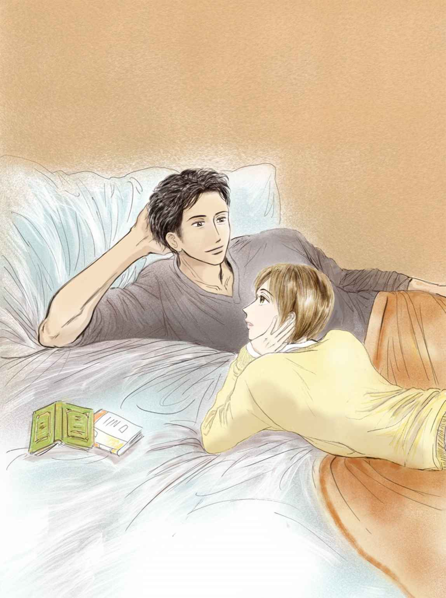

| Little boat goes to sunny 完全版２ (BL小説) | |
| 有間しのぶ | |
| leap fish book (2018) | |
目次
第１章
再会
毛布
事情
深秋
事態
第２章
夜の駐車場
宵街の誕生日
第３章
小鳥と衛兵
第１章
再会
朝のいつもの時間、学校に着いて廊下を歩いていると、事務室の窓口から呼び止める声がした。
「小木君だよね？ええと、小木響くん」
受付のガラス越しに、初老の事務員が手招きした。この学校への編入手続きの際に世話になったので、響の顔を覚えていたらしい。
「はい、おはようございます」
「財布が届いてるよ。落とし物だって」
「え、ほんとですか」
事務室へ入った。拾得物入れの箱から取り出された黒い財布はまぎれもなく響の物だが、落としたのではない。一昨日の夜に宵街という少年に貸した服の、ポケットに入れていたものだ。"宵街"というのも本名ではないが。
「君のだと思うけど、悪いけど念のために、中身を言ってもらえる？覚えてる限りで良いから」
「ええと...、現金が２、３千円、小銭、学生証、Suica、それくらいかな。映画の半券も入ってるかも。そんなとこです」
事務員はうなづき、
「合ってる合ってる、良かったね。これもはさまっていたよ」
と、一枚の紙片を財布にはさんで響に返した。メモ用紙かなにかを破った紙切れには、ボールペンで"ありがとうございました"と、大きな角張った文字で書かれていた。響は長い文面を辿るかのように、生真面目そうな文字の列を見つめた。
（あいつ逃げ切ったんだ、捕まらずに）
「これを届けてくれた人は...」
「昨日の朝、９時頃かな。うちの生徒じゃないチャラチャラした不良っぽい、と言っちゃ悪いが、金髪頭で汚いフード被った子が走り込んで来たんだよ。こっちゃあ、不法侵入か！？と身構えてつい立ち上がっちゃった、ハハハ」
「はあ......」
「そしたら受付のカウンターに、ぱたっとコレを置いてね、"ここの生徒の落とし物！"ってだけ言い残して、また走って行っちまった。だから連絡先とかはわからないなあ。」
「そうですか...」
響は事務員に礼を言って、教室へ向かった。
席について戻って来た財布を開き、内ポケットまでひっくり返して見たが、さっきのお礼のメモ以外に、メッセージ的な物は何もなかった。
「アドレスとか伝言のメモとか...なんか残してくれればいいのに...」
朝のざわめきに満ちた教室で、ひとり天井を仰ぐ。
（一昨日のあの騒ぎがあって、次の日の朝には返しに来てくれたのか。あいつだってボロボロだったのに。K町ってとこにまだ住んでるなら、凄い遠くからわざわざこのために来たってことだ）
響は昨日、鷹森の言葉に甘えて学校を休んだ。豪勢な鷹森の自宅マンションで、会合に出かけた鷹森の留守番をしながらでかいテレビで映画を観まくり、片端から古い音楽を聴き、ジャグジーで遊び（こんどは眠り込まずに）、夕方からは鷹森に連れられて都内の店を廻っては本や日用品や普段着一揃いを新調してもらい、夕飯を食わせてもらってから車で自室へ送り届けられたのだった。気まずい様な小さな罪悪感が沸いた。つい独り言が出る。
「悪かったなあ、昨日おれ休んでて」
自分が羽根を伸ばしていた間、宵街は一人でどうしていたのか、身の上を聞いてしまっただけに気にかかる。
「このために電車賃使わせちまった。おれ助けたつもりで、逆にあいつに迷惑かけたよな...」
ひとりごちながら、鷹森にメールした。
"財布返って来ました。例の火事の時の子、昨日の朝に学校に届けに来てくれたみたいです。"
鷹森はもう起きていたらしく（おそらくはまだ、あの巨大なリビングでひとりコーヒーでも飲んでいるところ）、すぐ返信が来た。
"その子はお前に、信用して欲しかったんだろう"
「そうかも...だけど、アドレス知らないとこれっきりだよ...」
「小木、風邪もういいの？」
「なんか擦り傷多くね？熱でて転んだ？」
クラスメートが２、３人、口々に訊いて来た。響は力なく頷いた。
「K町 スナック宵街」で検索しても、何一つ情報はなかった。
一週間ほどたった日の放課後。校門を出た響は、細い私道を挟んだ向かい側に、街路樹に半ば隠れるようにして立っている金髪頭を見つけた。この日が来るのを待ち望んでいた彼は、大声で呼んだ。
「宵街！！」
宵街は響が見つける前からこちらに気づいていたらしいが、お辞儀の途中のようにぎこちなく頷いてみせた。相変わらず華奢で小さい。手に紙袋をぶら下げている。響は信号も無い細い道をダッシュで渡った。宵街の顔から眼が離せない。走り寄る響を見て、それまで緊張してこわばっていたアヒル口が、にこっと口角を上げた。
（うっわあ、やっぱりかっわいいな。昼間見っとマジ可愛い。）
あんまり無邪気に可愛すぎて、ようやく会えたのも宵街が来てくれたのも、ニコニコしてるのも嬉しくて、腹から笑いがこみ上げてくる。
二人は向かい合うなり、思わず相手の腕を掴んだ。実在するか確認しあう自分たちがおかしくて、
「あははははははは......」
と笑い崩れてしまった。進学校の学友達が、この取り合わせを不審そうに横目で見ながら、通り過ぎて行った。
「こないだはごめんな。こっちがバカだったのに、わざわざ財布返しに来させちゃって。しかもおれ学校休んでて」
「休みってきいて怪我したのかと思ったよ。大丈夫だった？」
「おれはなんとも。そっちこそ」
言葉を切って見やる響に、かすれ声が笑う。
「あんなん捕まるもんかよ。人がいっぱいいたろ、群衆って大きな象みたいだからさ、あちこちくぐり抜けて逃げ切った」
宵街はあの酷い夜よりもこざっぱりして、目立つ傷もないようだ。
「そっか、よかった」
（よかった、無事で。また会えて。こいつやっぱいい、なんかいい。もっと話したい）
クラスメイトや教師には覚えた事の無い高揚感を感じる。
ゆっくり話そうと、とりあえず一緒に手近なドーナツ屋に入った。響はおごりたかったが、宵街は
「もう大丈夫、金はなんとかなった」
と受け付けない。その一方でこうも言った。
「あの時、実は響さんの服のポケットに財布入ってて、すごい助かったんだ。おれ文無しだったから、本当言うと中から借りちゃったんだ。使った分戻しといたけど、勝手にごめん」
「いいんだ、使ってくれればいいなと思ってたから。でも連絡先残しといて欲しかったよ、もう会えないかと思ってた」
「会いに来るつもりだったから」
おそらくは下心なく耳元でささやかれ、響は両頬が熱くなる。
トレイを持ってレジに並ぶ間、セクシーボイスは包囲の輪を抜けてからの逃避行を、面白可笑しく話し続けた。店員の女の子はトングでドーナツを挟もうとしては、何度も落っことしていた。眼が宵街に釘付けでは無理も無い。
日当りの良い席に向かい合って座った。二人が座ると、それまでけたたましくさえずっていた女子高生のグループが、ぴたっと静まった。響は眩しくてまともに見られない。むろん陽射しのことではない。
「これも借りっぱなしだったろ、ありがと」
紙袋を手渡され、見ると袋の中には響のパーカーが、あちこち焦げ穴はあるものの、きちんと洗ってたたまれていた。
「こんなのまで...悪かったなあ、わざわざ」
「なんでさ、借りた物は早く返さないと落ち着かないよ。でも、おれ」
宵街は言葉の途中で自分で笑いながら
「服も早く返したかったんだけど、しばらくの間は着替えが一枚も無くて洗えなかったんだよ」
「今はどうしてんの」
宵街は今日は長袖のTシャツに黒いデニムだ。あの時身につけていたものは火が点いたり破れたりで、もう着用はできないだろう。
「先輩がいるって話したっけ？バイト回してくれてる。その人が、量販のジーンズやTシャツの流通を知ってて、ごそっと分けてくれた。ちょっとした縫製ミスで市販できないけど、充分着れるようなのを」
「よかったなあ、いい先輩で」
「あの晩、なんとか逃げ切って地元に着いて。もう家に戻りたくなくて、直で先輩んち行ったんだよ。おれんちの事情話したら、ずっとに泊めてくれてる。でももうすぐ、その人仕事で引っ越すんだよ、K町を出てこっちの街の近くに」
「そうなのか。宵街はどうすんの？」
「おれも一緒に来てもいいって言ってもらった。仕事も、その先輩と同じとこに決まるかも」
「それはいいな、これからも会おうよ」
宵街はなぜか口をつぐみ、ストローでアイスコーヒーを吸い上げた。怪訝に思いながら、響も黙ってコーヒーを口に運ぶ。煮詰まりすぎていて苦かった。相手はストローを口から離し、背もたれに背を預けて眼を細めて響を眺めた。
「響さん。あん時も思ったけど、やっぱ頭いいんだな。すごくレベル高い高校でしょ？」
「一応進学校ではあるけど、どした急に？」
「雰囲気もいいもの。おっとりしてるよ、元はいい育ちなんだな」
「どしたんだよ」
響は笑いかけた。
「倉庫でおれがあんたに高校生だろって言ったら、スジモンだなんて粋がっちゃって」
からかうように流して寄越す目線が甘い。
「それは...嘘ってわけじゃ...」
どぎまぎして視線を泳がすと
「優等生なら、おれなんかと一緒にいないほうがいいぜ。おれ、組に入るんだ」
響は無言で宵街を見つめた。予期しなかったようで、全く意外ではない。宵街はあの夜のようにじっと観察する眼で、響の表情をなぞっていた。だが眼差しにいたずらっぽい微笑が宿っている。
「スジモンなの、高校生なの。両方ってあり？」
「宵街、どこの組？」
答えを聞く前からわかっている気がする。響は顔や声にそそられるだけでなく、とても深い所で、宵街とつながっている気がする。つい、テーブルの上の宵街の手を掴んだ。宵街は掴まれたまま顔を寄せて、吸い込まれそうな瞳で見つめ返して来た。同じことを感じている、直感でわかった。綺麗な唇が開いてかすれ声がささやく。
「おれがなんで決めたか言おうか。その組には金融に強い相談役がいて、高校生の男の子を一人、借金地獄から助けて面倒見てるってきいたからだよ。」
「その人がおれの兄貴だ...」
宵街は響の手の上に、もう片方の自分の手を重ねた。
「だったらあんたは、おれの兄貴になってくれ」
腰から蕩けそうな、官能ボイスがそう言った。
西日が照りつける駅の改札で手をふって響と別れた後、宵街は全身から大きな息をついた。人目も気にせず、膝に両手をつく。膝頭が震えていた。
（情けねえな...こんななって、もう...）
会いたい、それも烈しく願った相手に本当に会えた。
（んなの初めてだな、おれ。響さんとは初めてのことばっかしだ。そんでいいことばっかし）
見ず知らずの自分を助ける為に、たった一人で追ってきてくれた。火事に巻き込まれた時もとことん庇ってくれた。実の親さえ自分を捨てて出て行ったのに。だがそれだけだったら恩義は感じても、ここまで慕わなかった。
（お父さんもお母さんも死んじまって、もしかしておれよりもっと辛い思いしたかもしんない）
多くを語らなくても分かり合える人に出会いたかった。施しでも同情でもない。
（自分がねじくれちまってることは知ってる。会ったばっかで勝手におればっか盛り上がって、ばかみたいだ。あぶねえ。でも、会いたかった。会ったらまた余計に会いてえ）
倉庫で聞いた響の身の上を、宵街は誰にも話さなかったがちゃんと記憶していた。世話になってる先輩に連れられてこれから入る組に挨拶に出かけた時、組員の口からそこが幹部と相談役のパイプのおかげでどんなに潤っているか、自慢話が出た。口利きの組員は、相談役なしでは今頃どんな暮らしになっていたかわからない少年の話を引き合いに出した。引き取られいい高校に通いながら右腕になるべく修行中の少年の話。"つまりうちは金捌きの上手い組ってことよ。安心しな"というオチだったが、宵街が夢中になったのは別のことだ。響に接点ができる。自分と同じ暗黒の道を歩いて来た、そしてあの一晩で別れ難くなった響に。先輩が断っても自分だけでも入りたいと望んだくらいだ。
彼には今まで、目指せるような人間は誰もいなかった。義務教育は終えたけれど、心や魂はどう育てていけば良いのかを教えてくれる人はいなかった。どこへ心を寄り添わせれば道に迷わないのかも、自分を見下げずに済むのかもわからない。わからないまま、ずっと独りだった。
（あの人の傍にいたい。でないとおれ、ダメだ、駄目になる）
響との邂逅は、暗く重苦しいガスにまかれたような日々に、すうっと爽やかな風が吹いて光を運んでくれたのと同じだった。助けられ守られたという甘さとともに、話をしていてまっすぐに通じる心地よさは希有だ。相性がいいとはまさにこれだ。その上、全く恩にも着せず威張りもしない。
（やっぱただの高校生じゃねえ、オトコ張ってるだけあんぜ）
（おれもああなるんだ、決めた）
（響さんの一番の舎弟になろう。ずっと傍に居る。きっとすげえ楽しい。いざって時は、今度はおれがあの人を護る）
さっき学校の近くで、ドキドキして待っていた。迷惑がられたらどうしようと。でも響は嬉しそうに名を呼んで、走り寄ってきた。二人して笑った。ドーナツショップは明るくて賑やかで違う人生みたいだった。向かい合っていてもこっちの眼をなかなかまともに見てくれない理由は、頬も耳も真っ赤にしているところにあるらしい。思い出して宵街は自分も赤くなりながら泣き笑いのような顔をした。もう一度会いたいと焦がれていた時も、再び会えた後の今も、胸が締め付けられる痛みと沸き立つ昂揚感があって混乱していた。
（なんだろこれ）
轟音をたてて、ホームに電車が入ってきた。下校した学生達を始め、増え出した乗客がざらざらと降り、入れ替わりにどろどろと乗り込む。その人波に混じって車両に収まりながら、宵街は小さい頃からお馴染みの、けれど決して慣れ親しめない寂寞を抱えていた。自分と同じ想いの人と一緒に居られたら、こんな、どこかを捥がれたような苦しさはなくなるに違いない。
（そしたら絶対に大事にする、なによりも大事にするのに）
叫ぶように思い、自分の心がどれだけ傷だらけだったかようやく気づいた。
毛布
鷹森は、ふっと目が覚めた。
疲れすぎて頭に入らない読み差しの本を開いたまま、うとうとして眠っていたようだ。
起きようとして、背中まで毛布がかけられていることと、腰のあたりに固まりが寄りかかっているのに気づく。
肩越しに固まりを眺めると、それは鷹森の背中にもたれて寝そべり、マンガを読んでいる響だった。都内にある全国有数の進学校の制服はまだ衣替えしたばかりで、白シャツにコットンのゆったりしたセーターと淡灰色のズボン姿だ。鷹森をみてにこっと笑う。
「...いつ来たんだ」
「２時間くらい前です。ドアが開いてたし柾也さんおやすみ中だったので、勝手に入ってました。」
言葉遣いとやってることのギャップは気にならないらしい。
組事務所とは別に鷹森が構えている、個人オフィスである。無駄に豪勢な自宅マンションよりも、ほとんどここに寝泊まりしていた。響も鍵をもっていて、毎日のように自由に出入りしている。仕事の手伝いがない日でも。
（なにが面白くてここに来るのかわからない）
外の雨の音が部屋の中にも聞こえていた。
「少し肌寒いな、空調つけてくれ」
「それがエアコンおかしいんです。リモコンの電池いれかえたりしたんですが、作動しなくて」
「古いからなあ、買い換え時か」
響はどうやら寒くて、この狭いシングルベッドによじ登ってきたらしい。猫の仔だったら毛布の中まで潜り込んでくるのだろう。こんな事が出来るようになる程懐いたかと感慨深い。
（こいつは猫の仔じゃないけど、やっぱりまだ子供だなあ）
おかしかった。そしてふと、自分に屈託なく触れて来て自分も平気な相手は、（こいつだけだな）と思った。響はすこしも悪びれず肘で毛布の上を歩伏前進してきて頭を並べる。鷹森の身体は毛布の中だから安心しているのだろうか。
出逢った時と比べてかなり背は伸びたものの、まだ鷹森と並んで歩くと肩の位置がすこし低い。なのでこうして横になっていても頭が並ぶとうれしいのか、にまーっと笑った。鷹森がうつ伏せから体勢を変えて、片方の手で自分の頭を支え向き合うと、微笑みは微かになり眼を伏せた。
（おれの動作が無骨だったかな）
手をつい響の体において、怖がらなくていいなにもしないから、と伝えそうになったが寸前でやらなかった。いちいちお互いに気にかけあっていては、忘れた方がいいことも忘れられないのではないか。鷹森はおおむね、表面では鈍物をきめこむことにしていた。
（でも少なくとも同じベッドにあがりこんでマンガを読んでるんだから、おれは少しは信用されてると思っていいんだろうな）
「おまえ、マンガもいいけど宿題は。学校の帰りだろう？」
「宿題は、放課後友達としゃべってる間になんとなくできちゃって」
「まるで娯楽だな」
響は全国でも屈指の進学校に通っている。友達は多くはないが、仲良くしているのは頭が切れる上に陽気な子達らしい。学校の課題など「ここがこうでこれがああだろ」「そんでこうでこうだよ、なんだ」と、鼻先で片づけあってるのが眼に浮かぶ。向き合って至近距離で喋る響は、また屈託のない顔にもどっていた。
（相変わらず笑い顔が可愛い）
（毎日見てるのに毎日可愛い）
つい頬に触れたりする前にごろりと背中を向けて
「もう少し寝る。」
「はい。おれオフィスにいます。電話番しながら帳簿つけてますから」
「寒いだろ」
「オフィスのエアコンは大丈夫です。」
「おまえさ、気を使わなくていいから。学校終わったら友達と遊びに行けよ。ここ来てもストレスたまるだろう、密室だしおれしかいないし。手伝ってほしいときは呼ぶから、それ以外は自由にしてていいんだよ」
「ここ隠れ家みたいで落ち着くんです。友達みんな塾や部活だし」
「おまえも塾行くか？」
「えっ、必要ないし！それより格闘技を何か習いたいです。いいですか？」
背中を向けた鷹取の体がゆさゆさ揺らされた。揺れながら
「大学受験に合格してからなら」
「大学は行かないです。引き取って仕事を教えてくださったのは、卒業したらすぐ働けるようにでしょう？なんで最近よくそのお話になるんですか、大卒の資格が必要なら取りますから」
ここへきてやけに鷹森に進学を促されるようになったのが、響には解せなかった。そればかりならいいが、大学を機に遠くへ行ったらどうかと匂わせる。今まで通り生活費も学費も出してやるが、組と自分から離れろと。それが響には腑に落ちないし、悲しい。しかも普段は明晰瞬殺の男が、響の進路の話になると、歯切れの悪い、まるで自分でも決断しかねているような、曖昧な言い方をする。自分は鷹森が思っていたよりも役に立たず、足手まといなのではと考えると、いたたまれない程のすまなさと、放り出される恐怖を覚えるのだ。
「柾也さん...おれ、見込み違いでした？がっかりされてるんですか？」
声と息がすぐ耳元にかかる。鷹森は本心を答えた。
「見込み以上、想像以上に優秀だった。」
「ほんとに？」
疑わしそうな声が頭の上でする。
「覚えは早いし融通は利くし。仕事の流れを俯瞰で見る事が出来るのは、貴重な資質だ。出来る事と出来ない事を正直に言える。この前できなかった事が、いつの間にか出来るように身に付いている。とても助かる。食い物の好き嫌いは、ちょっとはあるけどあんまりないし」
「ちょ...冗談なんでしょ？」
「あまりにもったいないと思うようになったんだ。お前はこんな稼業で埋もれるべきじゃない。こんないい子を極道が独占してはいけない。」
「そんなことないですよ...それにおれ、もう舎弟が出来ましたから。おれが極道にならないと、あいつが路頭に迷います」
鷹森はつい笑ってむせかけてしまう。例の工場の火事で出逢った、宵街という子のことは聞いていた。あどけない話だが、これ以上子どもの面倒はみれない。
「お前がヤクザじゃないんだから、その子も舎弟じゃない。ただの後輩だ。仲良く遊べ、平和に」
「だからおれに、柾也さんの盃を下さい。兄弟盃を交わして下さい」
「......」
鷹森は受け流しでなく話し合うために、ゆっくり寝返りをうつ。響が真剣に、触れ合う近さでのぞき込んでいるのでやや焦り、上体を起こして壁にもたれて座った。
「響、子供の頃何になりたかった？今からそれをめざせよ、おれに恩とか義理とか考えなくて言い、組のことはもっと考えなくていいから、なりたいものになれ。応援するよ、友達として応援する」
「子供のときは...接客業かな...。家族で客船で船旅をしたとき、空も海も真っ青でパーサーたちの制服が白くて、とても綺麗で...。おれ達みたいな子どもにも折り目正しいんですよ。外国語も滑らかに話して。格好よかったなあ、憧れました。」
「これから目指せばなれるよ、おまえならなんだってなれる。自分で思ってるより何百倍もいろんな可能性があるよ」
響は笑って
「それはもう、ただ小さい頃憧れてたっていう過去形の話です」
そう言いながら鷹森に並んで、壁にもたれる。
「柾也さんには、おれは友達なんですか？」
「そうだな、いま不意に言葉になったけど。お前とは歳が離れてても、いい友人だと思ってる」
「ずうっと一方的に世話になってるのに」
「関係ないよ、おれが引っ張り込んだんだし」
鷹森の声がじかに皮膚にしみるような距離で話していると、響は心配事がすうっと消えて行くようだった。
「じゃあ一緒にいます」
「なんでそうなる」
「友人なら対等でしょう？」
「そういう話じゃないだろ」
「それにおれ、接客は向いてないと思います。数字いじってれば楽しいから職場はどこだっていい、だったら柾也さんの傍がいい」
「極道は嫌いだろう？」
「仕事だもの好き嫌いを言ってられないでしょう？それに極道でも柾也さんの事は、す、...尊敬してます」
「......」
鷹森は組長に子分盃をもらっているので、極道であり、若衆の一人である。相談役という立場から、身分は若頭の下、組長代行とは微妙に対等くらいだ。その辺の事情を、響はすでによく知っていた。
「では、おやすみになってください」
「帰る時は声かけろよ」
「泊まるつもりで来てますから」
そっとドアの隙間から窺うと、鷹森はぐっすり眠っているようだった。相変わらず怖いくらいの静けさで、身じろぎもしない。
（柾也さんは、神経も心も休めてるんだろうか）
薄闇に、死んだように動かず毛布をかぶっている鷹取を気遣わしげにしばらく眺めてから、響はささいな音もたてないようにそっと、その場を離れた。今日の午後も、肌寒い日だったのでそっと毛布をかけてやりながら、鷹森のあまりに静かな寝姿にふと寂しくなった。自分でもなぜか分からないが、そんな風に眠る鷹森が痛ましくなったのだった。眠る子どもの枕元に縫いぐるみを置くように、自分を横たえてみた。毛布越しに鷹森の体は熱かった。自分の体温も伝わっているだろうと思う。言葉よりもずっと確実に。
（でもここで眼を覚まされたら余りに気まずいよな）
ふざけた小道具として鞄から、友達に借りたマンガを取り出してみたのだった。そうでもしていないと、つい毛布の中に入ってしまいそうだった。
（けど）
響は自分の声に耳を澄ませた。
（おれはこの人を抱きしめてやりたいんだ）
うろたえもせず言い放つ自分の心に、本人は為す術もない。
事情
若頭の経堂が、青ざめた顔でささやいた。
「"南米の犬"が戻ったぜ」
レストランの個室で経堂の皿にカルパッチョやサラダを取り分けていた、鷹森の手が停まった。
「佐治が。いつです？」
それからレタスの上に、経堂の好きなフルーツトマトを可愛く載せた。赤と黄色と一つずつ。
「一昨日、帰国したらしい。まっすぐ事務所に出向いて組長（おやじ）に挨拶したが、そんとき居合わせた駒尾をないがしろにしたってんで、あそこの若いのが派手に噛み付いたそうだ」
「あの運転してる子ですか、気の強そうな」
「ああ。へらへらかわす佐治の腕に、代行がグルーピーみてえにへばりついてたらしいぜ。ったく、どっちが上なんだか。オリーブは載せないでくれ、相談役」
「はい。野菜は残さないで下さいよ」
「おれの所には明後日にでも挨拶に来るとよ。お互いに会いたくねえのはわかってるのにな」
経堂はフォークを持ち、綺麗な盛りつけに忌まわしい話を忘れて笑ってしまう。
「響にもこうやって世話を焼いてるのか」
「そういうわけでは」
「ははは、焦るとこ見ると図星か。いいじゃないか、あんた人間味が出て来たぞ、あいつの面倒みだしてから」
鷹森は素知らぬふりでアルコールフリーのビールを口に運ぶ。経堂は酒を飲まないので自分も控えていた。
今日の午後、オフィスに経堂から「飯でも食おうや」と誘いの電話が来た。言われた店に出向くと、個室に通された。状況からして改まった話があるのは予想できる。サラダを静かに咀嚼する経堂は、このところ更に面窶れしていた。事態は彼の手に余るのだ。
「相談役。あんたは今まで一度も、おれの意気地のなさを笑った事が無かったな」
「若頭」
「表面でへつらっても、腹の中で小馬鹿にしてるやつはわかるもんだ。あんたはおれを馬鹿にせず、いつも立ててくれた。感謝してる」
「.........」
鷹森は覚悟した。
「おれは、跡目を代行に譲る」
「......ご決心されたのですか...」
「ああ、このまま立場上のNo.２と実力のNo.２がいがみあっていたら、必ず戦争になる。下の者がたくさん血を流す」
通常、組長の跡目を継いで次期組長になるのは若頭と、相場が決まっている。だが、八景組の組長代行は現組長の兄弟分であるので、変則ではあるがそう外れてはいない。
「おれは引退はしねえ。おやじが苦労して大きくした組に愛着があるからな。名ばかりの万年若頭として、ジジイになるまで居座るよ」
鷹森は、英断だと思った。プライドやメンツの為に命を落とすのが常の極道社会で、経堂は自分の器を知っているが故に、恥をさらして居残る事を選んだ。本人は言わないが、組に残る自分の配下を慮ってのことだとは判りすぎる程判っている。
「私どもが至らない為に、若頭お一人を針のむしろにあげてしまいました...。詫びきれるものではありませんが、お許し下さい」
「よせやい」
経堂は眼の縁を薄赤くしながら、それでも口にして気持ちが座ったようだ。
「これでもう、他のやつがどんなに嘲り笑おうがおれは平気だよ。相談役がわかってくれると思えばな」
「私だけではありません、若い連中はみんな身にしみています。おやじさんだって」
その時、経堂と鷹森の携帯が同時に鳴った。先に出た経堂が頷いてみせるので鷹森も電話を開いた。着信は組の若い者だった。
「駒尾さんと運転の若いのが、事故で重体です。坂道を無人のトラックが突っ込んで来て...！」
病院に駆けつけ、二人が命を取り留めた事を確認して経堂を家へ送り、鷹森は自分のオフィスへ帰った。
この日の事を、響には何一つ話さなかった。

深秋
洗い立てのように気持ちのいい、秋の風がふいている。蒸すばかりの残暑からようやく解放されたとたんに長雨に見舞われ、いっときは涼しくなり過ぎた。だが今日のように晴れ渡った日には、通行人も街路樹も高い空の下、生き返ったように見えた。
そんな爽やかな午後に、八景組事務所のドアがいきりたった響の手でばん！と開いた。学校帰りらしく鞄を肩にかけた制服姿だった。柔らかそうな髪を少し乱し、唇を一文字に結んでいる。
顔馴染みになっている組員たちが
「びっくりしたー、鉄砲玉かとおもった」
「どうしたんだ響」
などと声をかける。響は黙礼して組長の部屋をうかがった。ドアが半分開いていて、中で組長と経堂がが将棋盤を挟んで唸り合っている。後ろで経堂の補佐が、笑いながら見物していた。
「あーっ、待った待った」
「待ったなしです。組長。王手」
「ぐぬう...おや、響じゃないか？よく来たね（ガシャガシャ）」
組長は響を見て相好を崩し、立ち上がりながらごく自然に盤の上を掻き回した。
「ああっ、なんてえ大人げねえ！」
「入院中のおれがおとなしすぎるって泣いてやがったのは、経堂、お前だろ。さてさて響、どうした、一人で来たのかい？」
ブツブツ言いながら経堂も顔をあげ、響に、おう、と頷いた。補佐は立場上シブ面を造り
「おい、なんだそのなりは。セイガクの格好でここ来んじゃねえぞ」
「すみません、急いだのでつい」
「いいんだよ、若いうちはいろいろあるわな...」
ツンデレに弱い組長だが、ツンにはもっと弱い。以前はふくぶくしく肥えた赤ら顔の、おっさんからじいさんへの階段登り中だったが、このところの体調不良ですっかり肉が落ちてしまった。
「おめえの保護者はどした」
「それが...」
と言いかけた時、鷹森が階段をかけあがってきた。響が上でエレベーターにドアストッパーを蹴り込み、停めっぱなしにしたので走って来たのだった。額に血管を浮き出しているのは、階段のためではないらしい。
「やっぱりここだったか、こら響！」
細い手首をとっつかまえようとしたら、小脇に抱えた書類の束から数枚がぱさぱさと舞い落ちた。
「鷹森相談役..."進路指導のお知らせ"のプリントが...」
「こっちは"父兄の方へ・修学旅行について"です...うおっ、いいなあ、北海道かあ」
組員達が拾って渡してくれるのを受け取りながら、鷹森は
「おやじさん、若頭、騒々しくてすみません、今すぐ響のやつ連れ出しますから。信号待ちのときにするっと降りちまって。ほら、帰るぞ」
「帰りません。おれ、組長に直訴に来たんです」
組長はパアアアッっと輝いた。
「響がおれに愛に（組長の脳内変換）！！なんだい？なんでも言ってごらん。わかった、鷹森がセクハラしてるんだろ？それとも小遣いをくれないのか？相変わらず細いなあ、ご飯食べさせてもらってないのか？」
「違います、柾也さん...いえ、兄貴はものすごくよくしてくださってます。」
「...まだ名前で呼んでるんだ、ふうん...」
苦虫噛みつぶした組長と響のやりとりを、さらに苦虫噛みつぶして聞きながら、鷹森はソファにふんぞりかえる。
「今日は三者面談だったんで、兄貴は学校に来てくださって、担任とも話して」
経堂が笑いをかみ殺した。
「うんうん」
「おれの希望進路は、今もバイトしてる兄貴のオフィスなんです。そう話したら担任はともかく、まさ...兄貴が猛反対するんです。兄貴はおれのこと、高校卒業したら外国か大学にやる気なんです」
「なんだって」
組長は大げさに目玉をひんむいた。
「おれは卒業したら兄貴と、この組のために働くっていうのが約束だったし、夢なのに！」
このところしきりに蒸し返されている話題が爆発したのは、本日午後の面談中のことだった。
途方に暮れる中年女性の担任をはさんで、しだいに強硬な口調になる鷹森と、ガンとしていうことを聞かない響とで意地の張り合いになり、結論は出ないまま「おうちでお二人でよく話し合って」とお開きになった。鷹森が運転する車に乗り込み、響の部屋へ送る途中もずっと、お互いに自分の言うことをきけきかないの応酬だった。
（こいつ、ここまで頑固だったとは。）
鷹森は内心で舌を巻く。響に逆らわれたのは初めてだった。これまでずっと、自分の意志がないのかと思うくらい、なんでも鷹森の言うことをきいて従ってきたのに。普段から人一倍弁も立ち、必要なら老獪な詭弁も熱弁もこなす鷹森だが、どんなにあれこれなだめてもすかしても
「卒業したら柾也さんのオフィスに残って補佐をします。そのためにおれを助けてくれたんだから、あの雪の日に。」
その一点張りでは懐柔も説得もしようがない。
「あの時はあの時だ。」
折悪しく、平日だというのに環状線は渋滞ときた。車の列はぴたりとも動かず、二人の乗ったセダンもその中にはめ込まれた。
（それは今更ないですよ）と響は言いたい。鷹森を信じて手本にしてきたのに。響が頑固なのは鷹森が聞く耳もたないからだともいえる。この３年間学校生活や友達つきあいは尊重してもらいながら、大人と同じかそれ以上に現場の知識を教え込まれた。また響も理数系が得意だったので、数字のあつかいは猫が鞠にじゃれるような愉しさがあり、易々とこつをのみこんだ。すでに鷹森の個人事務所の投資や株に関してはほぼ任されたも同然になっている。その間、幾度も響の進路については持ち出されてきた。意見は食い違ったままである。
「組長はおまえに甘いしゆるゆるだが、組の外に出たら極道は極限のシビアな道だぞ、はまってからじゃ抜けられないぞ。」
「そんなの最初からわかってるじゃないですか。」
「最初は...」
わかってなかった。こんなに心に食い込むとは。
（あの雪の日、すぐに全寮制の高校でもいれてやって、送金の形で面倒をみてやってればよかったんだ。ただの後見人として。）
でもあの時、初めてみた響の笑顔が今も心から抜けない。
「なまじ組の経理だの事務だの金の扱いなど教えずに、勉強だけさせておくんだった」
手放せなくなるという予感は当たったらしい。
（悪い予感だけあたりやがる）
響が絡むと心の生の部分がむき出しになっていく。響といて楽しい可愛い、と思う自分の心には奥底がある。それを気づかずにいられず、透かし見るのが恐ろしく、苦痛だ。理性や理論で解決できない感情は未知であり不安で、全て封印したかった。
おまけに周辺の状況がきな臭くなり過ぎている。
「おれほんとに感謝してるし」
響のぼそりとした言葉で、鷹森は我に返った。車はずっと渋滞のまま進まない。
「柾也さんのいうことならなんでも聞きたいけど、でもこれだけは...。感謝してるし、誰よりも尊敬してます。一緒にいて、もっといろんなこと教えてほしいんです。なんでも吸収しろって、よくおっしゃるでしょう？」
響の声は、怒らないで聞いてくれと哀願する気持ちがにじんでいる。鷹森に反抗するのは辛いのに、覚悟して言い張っているのが伝わってくる。しかし。
「担任の先生も唖然としてたろう、おまえの成績で進学を蹴るなんて。おれは許さんからな、３日以内に志望校決めろ。金はいくらかかってもいい、極道だけは認めない」
「柾也さん！」
鷹森はハンドルに手をかけたまま言い放った。
「きけないなら縁をきる」
響は黙ってシートベルトをはずした。停まったままの車のドアをガチャッと開ける。
「どこへ行く」
「卑怯な手を使わせてもらいます」
「なに？あ、待て、おい、響！」
渋滞のあいだを仔兎のように走ってすり抜け、道路を斜めに突っ切って鷹森の視界から消えた。消えた先は地下鉄の入り口。
どこへ向かったか察した鷹森は
「あいつ...！」
と腹が立つよりあっけにとられた。
車が動き出すまで待てず、この場に乗り捨てたいくらいだった。
ソファの上で鷹森は苦りきり、
「組長、子どもの判断ですから甘やかさないでください」
「子どもじゃないです」
「自分でそう言うのは子どもの証拠だ、だだをこねれば通ると思っているのも」
「組で親子喧嘩するな、鷹森」
「なんでおれだけ叱るんです」
「響の進路なのにおまえが口出しするって、そりゃあ若い芽をつぶすよ？けなげじゃないか、手塩にかけて育ててやった若い舎弟が、こうやって」
組長は自分で自分のせりふに感極まり、涙をそっと拭いた。
「どこへもいきません、と。組長のおそばにおいてください（そうは言ってないと全員が思うが、言えない）。ああ、いいよ、いいとも、来年の新卒はおまえだけだよ...」
「柾也さん、おれずっとそばにいていいって」
響が開けっぴろげの笑顔で、ソファの鷹森を振り返った。
「画策しやがって...」
鷹森はまだ憮然としている。
陽が傾くと、美しい茜空が見られた。
空に残る薄青に金紅の帯を幾重もたなびかせ、太陽は高層ビルの背後へ輝きを抱いたまま沈もうとしている。
鷹森は響と並んで歩きながら、肩の位置がまた少し高くなった、と思った。
組事務所の室内で言い争うのに嫌気がさし、響を促して散歩にでた。少し歩くとすぐ、近代的なオフィスビル街に併設された緑多い公園である。場所柄のせいか幼い子供が遊んだりしないかわり、仕事の合間に息抜きを楽しむサラリーマンや、近隣の美術館に来たらしい若いカップルが漫ろ歩いている。
鷹森はいつも、気分転換によく歩いた。響がいればたいがい一緒についてきた。外の風にふかれて歩きながら、響に学校であったあれこれをきいたり、車やスポーツの話を熱く語ったりする。そうしていると心がほぐれるせいか、煮詰まった計算も深刻な話もおもわぬ解決の糸口がみつかったりするものだ。
なので「響、ちょっと外に出よう」と促されて、響もすぐに立ち上がった。
「兄貴、刃向かってごめんなさい。でも組長まきこまないとおれだけじゃ兄貴に太刀打ちできないから」
「......」
ふたりきりなのに兄貴と呼ぶ響に、ちらりと視線が向く。
「これからはいつも兄貴と呼びます。癖になるように」
鷹森は、疲れた微苦笑とともにため息をついた。
「なあ、響。八景組は戦国時代に入るぞ。誰がいつ誰にやられるかわからん時代になる。」
「うわ、ここでそんな話やっばいでしょ」
だが、人影のない場所に来ていた。ビルの裏側の木陰の途切れた一角でベンチもないため、歩いているのは彼ら二人だけだ。見回して響は納得し、足を止めない鷹森に追いついてまた並んだ。
「組長代行が襲名しそうで不穏なんですね」
「そんなこと知らなくていい、まったく」
「柾也さん」
響が立ち止まった。堅い口調に鷹森も足を停めて振り向くと、真剣な眼差しが、まっすぐに見つめていた。
「柾也さんがおれを補佐にしないなら、おれは組長代行から盃を頂いて正式に組員になります」
「なに！？」
「組長代行の元に潜入して、スパイでもなんでもして、陰から若頭とあなたを支えます」
やにわに大きな手が伸び、響の肩を引っ掴んだ。鷹森の顔は蒼白になっている。響はひるみかけたが動じない顔を保った。
「本当はそんな事したくないけど、柾也さんがおれを突き放すなら実行できます。考えてた出した結論です」
「そんな裏街道歩かせる為にお前を引き取ったわけじゃない！本当に縁を切って叩き出すぞ、いいか！？」
鷹森は怒鳴りつけ、手の中の華奢な肩を鼻先が触れ合うまで引きずり寄せた。響の白い貌に、包帯でぐるぐる巻きのまま入院している、駒尾と運転手の姿が重なった。恐怖で惑乱しそうな鷹森の形相を壮絶な怒りと受け取って、響は血の気が引きながらも、目を反らさなかった。
「叩き出されても勝手に見守りますから...！」
「なにが見守るだ、ガキの分際で。誰の盃でも勝手にもらって何にでもなれ、その代わり他所でやれよ、目障りだからな！お前がいなくなったらセイセイするわ！」
内心これは効くだろうと思ったら、烈しい口調で返された。
「そんなに独りで居て、どうなるんですか！？」
「...一体、何の話だ？」
「柾也さんは、生きたい人の生き方じゃない」
切れ長の眼がきらきら光っていた。
「金儲けしても執着ないし、誰のことも傍に置かないし。家族も切り捨てて、友達も作らなくて、この世から消えちゃいたいんですか？眼を覚まして下さい！誰を亡くしたって柾也さんもおれも、ちゃんと生き残って、生きてるんだから」
鷹森は驚くより先に、痛い所をずぶりと突かれて今度こそ頭に血が上る。
「お前になんの関係があるんだよ！お前がおれの人生を矯正してくれるってのか、のぼせんな！」
響も怒鳴り返した。
「いいから、おれだけは手放さないで置いてくれ！おれがあなたを、この世につなぎとめるから！」
両手が鷹森の襟をひっつかんでいる。
「おれが居たら重いんでしょう、めんどくさいんでしょう！？上等だね、どんなに疎まれたって、おれはあんたをどこにも行かせないからな！！」
その頬を両手でねじ向かせ、鷹森は噛み付く程の間近さで吼えた。
「どうしたらいい！！どう言えばお前は安全でいてくれる！？」
響の髪を鷲掴み、荒々しく胸に抱き寄せた。
「どうしたらお前は幸せになってくれるんだ！？」
抱きしめた身体はおとなしく腕の中にいた。
「............」
空を仰いでも答えは降って来ない。細い身体を抱きすくめて鷹森は歯がみした。
厚い胸板に顔を押し付けられたまま、響は静かにしゃくり上げ始めた。こらえようとしても嗚咽が止められない。強く抱きしめている腕は、ほとんど狂おしいような所作で、肩や背中をかき抱いてくる。息がつけないが一生こうしていたかった。もう我慢なんかするかといわんばかりに、鷹森の鼻面が後ろ髪に深く埋もれたのもちゃんとわかって、響はぎゅっと眼を閉じる。
二人とも夕映えに立つ樹木のように、その場を動かなかった。
「......なんでそんなに、厄介事係のおれといたいんだ、お前は」
響は返事をせず、顔を伏せたままで鷹取の上着の中に両手を回した。
「お前を守りきりたい...でもおれはまだ組を辞められない。今おれが辞めたら、大勢がまた金の闇にのまれる、仕組まれた闇に。おれが組にいる限り、おまえもくっついていることになるなんて」
胸の辺りで小さな声がした。
「だから...二人なら仕事も早く片付くって言ってるのに」
響の両手はそろそろと鷹森のシャツの胸の上にきた。さっきまで拳を白くしてスーツの襟を握っていた手だ。
「兄貴の胸ぐら掴む舎弟があるかよ」
「...その舎弟を...捨てようとしたくせに...」
完全な涙声だ。いじらしさと安堵感がめちゃくちゃに沸き上がって、鷹森は顔がほころぶのを押えられなくなって来た。
「ああまで言っても利かないじゃないか」
頭を撫でてもつれた髪をそっと直してやってから、抱きすくめた両腕をゆるやかに解いた。響は涙でぐしゃぐしゃの顔で睨み上げ、
「はい、利きません」
と言い、
「見ないでください」
と赤くなりながら顔を逸らし、拳で涙を拭う。
「鼻かめ」
「見ないでくださいったら」
と顔を背けながら、習慣で鷹森に片手を出す。鷹森も習慣で、その手にポケットティッシュを握らせてやる。響の面倒をみるようになってから、鷹森のオーダーメイドのスーツのポケットや鞄には、ハンカチにティッシュからバンドエイド、胃薬、のどあめ、リップクリーム、ボタンが取れた時のためにお裁縫セットまで常備されている。
響は背をむけておとなしく鼻をかみ、
「もう観念してください」
などと言う。
「でないと、ずっと喧嘩続くじゃないですか」
「お前がここまで手強いとはな...」
「仲直りしたくないんですか？」
武骨な頬の辺りに気弱さが浮かぶのを見上げ、響はほのぼのと笑った。
「お前の進路に関しては話は終わっていないからな。まだ卒業までだいぶある、気が変わるまでしつこく言うぞ」
「無駄なのに。それより、修学旅行のおみやげ買ってきますね。やっぱりカニかな、あとはイクラ？」
話をそらすんじゃない、とか言いながら、鷹森ももう蒸し返す気力は残っていない。
「...とにかく今日のところは、おやじに挨拶してからお前を送って行くよ。」
鷹森が響の背に柔らかく手を当てて促し、二人は来た道を並んで歩き出した。
「電車で帰りますよ」
「いや送る」
（そんな目元を赤くしたまま人混みを歩かせられるか）
「来年は免許取って、おれが送迎しますね。よかった、受験しないから時間いっぱいある」
鷹森相談役は男子高生への完全敗北を悟って、再び天を仰いだ。
響を車で待たせて事務所へ挨拶に戻ると、組長が革張りの椅子に身を沈めたまま、手招きした。
「ドア締めてこっち来い」
渋々その通りにして近寄ると、病人と思えない力のある腕が鷹森の首根っこを引き寄せた。
「いててててっ」
痩せて点滴の痕だらけなのに驚く程の強さだ。タップしても放してくれない。
「ぐっ...おやじさん、おれは響を虐待してないですってば...」
「そうじゃねえ、柾也。早くあの子に盃やれ」
組長はそれが地の、低い暖かい声音で笑っていた。鷹森は床に膝をつく姿勢で、組長に頭を抱え込まれている。その二人の様子を傍のテーブルで、経堂と補佐が渋茶をすすりながらおっとりと見ている。
「お前の腹の中はわかってる、響が可愛くてしかたねえんだろ。ばかやろうめ」
のほほんと言いながら、首っ玉を容赦なく締め上げて来る。
「極道はいつ死ぬかわからねえ。他のやつに獲られたくないなら、響に盃やって、お前の弟にするんだ。そうすりゃたとえお前がくたばったって、あの子はお前のもんだ」
「おれは別に...」
「カッコつけんな。響のほうが正直だぞ。それにな、いつか響がカタギになりたくなった時にも、お前の盃ならいつでも割って、自由にしてやれるだろ？」
（畜生、さっきの喧嘩を聞いてたみたいにお見通しかよ）
首の血流が停まるかと思ったら、ようやく腕が離れた。鷹森は膝をついたまま、ふて腐れ気味に唸る。
「...おれは仔猫が育つまで毛を逆立ててる野良猫になったみたいですよ。なのにあいつは言う事なんかききやしねえ。ミャーミャー反抗ばっかするし」
おっさん３人がどっと笑った。
「はっはっはっ、柾也が久しぶりにおれに泣き言ぬかしやがったな。いいんだよ、それで。可愛がって育てるってのはな、苦しくて辛くて幸せなもんだ。お前は響にそれを習ってるとこなんだ」
若頭と補佐は柔和に見物していた。二人とも家に帰れば子ども達がいて父親稼業だ。鷹森など青臭いものだった。
鷹森が首根っこをさすりながら早々に引き上げると、おっさん達は再び顔を見合わせて、可笑しそうに笑った。
事態
後日。
八景組の気の良い組長はまたも発作で昏倒し、入院したままになった。そればかりか時折、判断や認識がおぼつかなくなり、合間の正気な時を縫うようにして、組長代行が正式に跡目を継ぐ盃を受けた。若頭の立場は据え置きである。若頭一派は冷や飯覚悟だが、それで離反して行く者がほとんどおらず、よその組に珍しがられた。
病床の組長は、時々持ち直しては響が高校を卒業するのを楽しみにしていたが、その卒業式の日に容態が急変し、身内と若頭や鷹森、ようやくギブス姿で退院した駒尾等、側近に見守られて息を引き取った。三月、別れ雪が荒れた。
そして、鷹森や経堂の懸念した通りに、状況は暗転した。
第２章
夜の駐車場

白熱灯が一つ、狭い駐車場に一点の光をぼんやり投げかけていた。都心から少し離れた雑居ビルの狭間である。空気がなまめかしくなる早春はまだ遠い。ゴミや吸い殻の転がるアスファルトが寒々しかった。
「いつまでも風つめてえなあ」
傍らのビルの壁にもたれてしゃがみこみ、カップめんを食い終えた岩田が、汁も飲み干した空容器に箸をつっこみ鼻をすすった。でかい体を包むブルゾンのファスナーを引き上げる。
「宵街、はいゴミ」
宵街は月極駐車の低いフェンスに浅く腰掛けていたが、ぴょんと飛んで立った。同郷で先輩の岩田は、昔から本名でなく"宵街"と呼ぶ。なので組の周りの誰もがこの閉店したスナックの名で彼を呼び、本人も普通に返事をしていた。今の仕事についてから外にやたら居ることが増え、日に焼けたせいか雑種の仔犬のような風貌になった。相変わらず髪はサラサラの脱色金髪だ。
岩田からゴミを受け取りコンビニのビニール袋ににいれた。
「捨てに行ったらたばこも買ってきて」
「はい、セブンですよね」
「おまえなんか楽しいことあったの」
「楽しいことなんかなんもねっす」
「ぴょんぴょんはねて来たから」
「ずっとここにへばりついて待機だから、根っこはえそうで。岩田さんも座り疲れてきたでしょ」
まったくうんざりだとは上に聞こえたらはり倒されるので言わず、岩田はただ、ああ、と答えながらタスポを渡す。彼らチンピラは上層部の運転手として、何時間もここで待たされているのだった。
宵街が近所のコンビニへ向かってすぐ、さっきまで岩田がもたれていた雑居ビルから一人、細身の青年が降りてきた。岩田は素早く立ち上がる。
「響さん、お疲れさんです！」
響の目の前まで走りよって６５度にきっちり礼をした。響は酒もタバコも入っていない涼しい眼で、
「待機ごくろうさん」
と頷いて見せた。２年前に八景組若衆の一人、鷹森柾也相談役から兄弟盃を受けて組員となり、肩書きは相談役補佐である。岩田の方が年上で実際のヤクザ歴も長いのだが、以前の組は合併吸収されて、現在の八景組構成員としては響より下である。さらに、新入りの折りに響に親身に仕事を探して後押ししてもらい、以来、岩田は響に一歩下がって敬語を使う。はじめは落ち着かず面映かった響も、割り切る事を覚えた。とはいえ、特に兄弟子分の契りは交わしていない。
「口の横に、カップ麺の葱がくっついてる」
からかい気味に指差すと、岩田は慌ててでかい拳で拭った。
「す、すんません。腹減ってたんで」
「ははは、いいんだよ。宵街は？」
「コンビニ、すぐ戻ります。上はまだ会合を...？」
「朝までかかりそうだ。おれは柾也さ...兄貴に帰されたけど」
響は仕立てのスーツの上着から、スマホを出して電話をかけた。
「宵街なんか食うもん買ってきて」
「あ、響さん、解放されたんですか」
宵街の陽気な声がする。響は失笑して
「人質じゃないって。おまえ今どこいんの？」
「そっからすぐのファミマっす。のみもんは？」
「冷たいお茶系ならなんでもいい。岩田は？」
「なんかデニッシュ的なもの」
岩田の声が電話越しに間近で聞こえて、ということは響のすぐそばに顔を寄せたんだなと思って、宵街はさっさと会話を切り上げた。
「了解でーす」
コンビニの外で通話を切った宵街は、平静そうだった響の声に、まだ緊張が潜んでいるのに気づいていた。
（今夜は会合って名のつるし上げだってマジなんだな。エンコ詰めか、それ以上か...）
小さな支部の一つの資金繰りにあやしい流れがあり、組幹部肝いりの監査役が横流しをつかんで鷹森のところへデータの洗い出しを依頼してきた。高校生の時から鷹森の個人事務所の会計を任され、というより丸投げされて経理も法規も不動産も実地で勉強してきた響も、ずっと事務所につめて手伝ってきたから事情は飲み込めた。今夜は行きがかり上、暴力沙汰の大嫌いな鷹森と響も呼びつけられて、みたくもないリンチ場面を拝まされる前に、鷹森は響だけを退出させたのだろう。やくざのリンチは半死半生かそれを越える。一緒にいる岩田も、以前の兄貴分をささいなミスで怒らせて、頬が裂けるほど靴で殴られた。傷痕はまだごつい顔に無数に残っている。その兄貴分も女がらみのもめ事で近畿まで逃げ落ちたが、土地の組員と小競り合いして死んだ。
（目に浮かぶ。鷹森相談役のぶっきらぼうな、めんどくさそうな追っ払い方）
この八景組ではそういった場の雰囲気が暴力にせよ乱痴気騒ぎにせよ"本格的にやばくなる"前に、鷹森がどうでもよさそうに片手をあげて、
「響、ちょっと事務所もどって株価みておけ」
「服が汚れないうちに、銀行屋行け」
「ガキは帰って先物取引して寝ろ」
とその場から追い出すのだった。
鷹森に影のように付従う響が、そう言われて影のようにそっと離れるのはそうたびたびではない。たとえば対立する人間が複数居て、そのまま内部抗争に発展しかねない不穏な場などは頑として動かなかった。それで鷹森は、組の資金繰りが口実なら、ほかの幹部や組員がこぞって響を出て行かせてくれるのを利用するようになっていた。組幹部のじいさま達は近頃は条件反射で、響が途中退出すれば金が増えるように錯覚しているらしい。
（相談役は考えてやってんだろな、あれ）
過保護にしているとも、あくまで外付けの位置においているとも、極道の骨頂である暴力沙汰では役立たず扱いとも、どちらにもとれる扱い方に、保身や下心目的で近づこうとする連中は、いまひとつ響に対して踏み込めない。響への態度がどっちに転べば鷹森を激怒させるかわからないからだ。むろん迫害などとんでもない。
（響さんはだから安全だ。幹部には能力買われてるし、あの人自身が好きでつるんでる俺らみたいなのもいるし。孤立しないで均等に距離を置けてる）
真相はただ単に鷹森が眼に入れても痛くないほど可愛がっているだけだと、素直に日々一緒にいればすぐわかる。響は鷹森ががっちりと庇護しているので、伸びやかで安定している。宵街はその雰囲気が好きだ。
（...でも大丈夫なんかな、あんなに鷹森相談役が好きで、尊敬しまくってて。時々心配になる。信用できないわけじゃないけど...おれはいまいち掴めないんだよな、相談役のこと）
宵街の十数年の人生で、自分を心配してくれて救ってくれた人間は、先輩である岩田と、響だけだ。他の人間に心からの服従はしない。
「脂っこい弁当しか残ってねえな...、お、幕の内ラスワンやりい。あとサンドと、お茶は響さん緑茶派だったな。ヨーグルトもいれとくか、カルシウムとんないとね。岩田さんにはアップルデニッシュてのがある、これでいいか」
宵街はかごにぱかぱか放り込みレジで支払い、店を出て岩田のタスポでたばこを買って、駐車場に戻った。響が待ってると思うと、気がせく。
しらっとした照明の元に品のいい大学生のようなスーツですんなりたっている響は、宵街が小さい体で駆けてくるのについ微笑んだ。その笑みが宵街にも見えた。
鷹取と幹部会に赴くときは削げた頬に堅く唇を結んで口数少ない。だがこうして自分達と一緒に居る時は、いまから絵本でも読み聞かせて寝かしつけてくれそうな位、柔和な表情をしていた。
走ってくる宵街のきらきらする大きな瞳が小動物のようで、響はさっきまでの緊張が一気にほどけるのを感じた。宵街の口の両端はにっと笑った形をしている。
（あいつ、地顔が笑顔、ってやつだな。あの無邪気な顔みてると、つられちまう）
（おれの顔見てほっとしたみたいに笑った...響さん）
宵街の胸に暖かいものがこみあげる。やっぱりきつい場にいたのだ。
（今、ぜってーほっとした、おれみて）
にやけないように落ち着いて歩いて、響に買い物を手渡した。
「サンキュ、なんでにやにやしてたのに急にすましてんの？レシートくれ」
（う、にやけたのばれてる）
「これです」
「はい代金」
「確かにです」
「お前おれの分のヨーグルトは？」
「え、岩田さん乳製品嫌いでしょ」
「きいただけ」
「宵街は飯食ったの？」
「あんま腹減ってないんで」
「おまえ痩せすぎだよ、このサンド食いな、おれこんなに食えねえよ」
「岩田さんのデニッシュ半分もらいます」
「しょうがねえな、割ってやる（めりめり）。いかん、中身が垂れる、
宵街、手出せ」
「やっぱいいっす」
「指全部舐めたからきれいだぞ、宵街いいこいいこしてやる」
「うわあ、やめてください岩田さん」
「こどもか...よせっ、いいから、おれを撫でなくていいから！」
「響さんだいじょぶ」
「だいじょぶだよ」
青白かった響の頬に、血の色がもどっている。
「なにはしゃいでんだ、うるせえぞ。車出せ」
ビルから一人の肥った男が、不機嫌そうにドタ足で降りて来た。暗い階段に降りて来る足が見えた時点で、岩田と宵街は駆け寄り、さっきのように
「丹治の叔父貴、おつかれさんです！」
と、きっちり体を折り曲げた。丹治という男はまだ中年にさしかかったばかりの年代だが、すでに容貌も服装も漂う何かも崩れていた。ぶよぶよと太りタバコのヤニと脂ぎった匂いに包まれ、金が入っても飲み食いやギャンブルにつぎ込む為、安物の化繊のデニムにたるんだ腹を押し込んでいる姿は、この世界さえ踏み外した感が拭えない。事実もう八景組での出世は望めない三下だ。
「相談役はまだまだお帰りになれないぜ」
中腰でドアを開けている宵街を待たせたまま、響に酒臭い息を吐いた。刃傷沙汰に混ざらない青二才への侮蔑があった。響は静かに
「ありがとうございます。丹治さんもお疲れさまです」
と頭を下げる。ちんぴら止まり相手でも礼儀は守らないといけない。とくにこの手合いの、捩じれたプライドは逆なでしたら面倒だ、とばっちりが直の配下の岩田に行くのだから。丹治は岩田の叔父貴分である。
その丹治は太り肉を揺すりながら、宵街の背中にべっとりと厚ぼったい手のひらを載せ、車に収まった。宵街がぞっとしたのが伝わる。ふくれたナメクジの様な手は、宵街の背骨を確かめるようになぞってから尻の方へおりかけた。響はとっさにその手を無言で取った。内心と裏腹に優しく握って宵街の体から外す。どんよりした眼がシートから睨め上げる。
「ああん？」
「お気をつけてお帰り下さい」
響は女流歌手がファンにするように、丹治の手を両手で包んで微笑んだ。
「...はん」
見透かされて気まずいのか、機嫌を取られて喜んだのか。たぶん両方の肥ったチンピラを乗せ、岩田は響に目礼してアクセルをふかし、車は走り去った。
「めんどくさいオヤジだなあ」
「響さん、ごめんね」
宵街は響の両手を、ジャンパ―から引っ張り出したシャツの裾でごしごし拭いた。響は笑って手を引っ込めようとする。
「骨董品みたいだからいいよ」
「貴重品だよ」
「あいつどうもお前にイヤッタラシイいな。大丈夫か、陰でなんか嫌な事とかされてないか？」
「たまにべたべたされるけど、今んとこ大丈夫。おれが響さんの盃待ちだから面白くないんだよ、あのおっさんの方が先に知り合いだったから。でもあいつと縁持ちたがるやつなんかいないよ」
「なんかあったら絶対すぐに言えよ」
「ん」
アヒル口をつぐんで素直に頷くが、声音は色っぽい。ちんけな街灯にも頬に落とした睫毛の影は濃く、明るい大きな瞳は大人びて来たせいか、翳りを帯びて深くなった。別に自分に敬語を使わなくてもいいと言ってあるが、宵街の方が一歩下がった位置を保っている。二人きりになると自然に、出逢った頃のくだけた口調がやや戻った。
（しょっぱなの頃はルックスにくらくらきてたけど。そりゃ今も可愛いけど、もうそれだけの時期は過ぎたな。中身がいいやつだ）
相変わらずどこに連れて行っても男も女も色めき立つが、そうされると当の宵街は居づらそうに身を縮めるので不憫でならない。自然に響は無粋なガード役を買って出る事になる。
「今夜暇になったな。事務所帰ってもすることもないし」
「どっか遊びに行く？」
そそのかしてくる宵街に、響は頷く代わりにいたずらっぽい目を返した。
「やった！おれも付いてっていい？」
「お前明日バイトは？」
「遅番」
宵街は響が見つけて来た、一般の会社のフロア清掃をしている。ヤクザとは全く関係がない。が、元々心底極道になりたいというより響といたかっただけなので、まじめに汗を流して労働している。
「じゃどこの店行くかな」
「響さん、いつおれに盃くれる？」
二人は歓楽街に向かってぶらぶら歩き出した。互いにすっかり夜型になり、またそれが性に合っていた。
「おれがもっと甲斐性できて、お前の面倒きちっとみれるようになったら」
「別に食わせてくれなくていいのに。形だけでいいのにな。周りの連中見てても、弟や子分の面倒きちっと見てる人の方が少ないのに」
「だから、おれはそういうの嫌なんだ。もう少し待っててくれ」
「おれが嫌な訳じゃないよね、迷惑なんじゃないよね？」
「違うって。駄々こねないの」
丸い金髪頭をくしゃくしゃと撫でられて、響の腕の中に収まった。それはそれで、
（あ、結構幸せ）
ではある。同時にすーっと一筋の寂しさも沸いて来る。
（おれってただの弟分なのかあ）
自分たちがとてもうまが合う事、通じ合う事。知り合ったばかりの頃、響が純情丸出しで自分にどぎまぎしていた事。
（そういうの勝手に都合良く解釈してたの、おれだけなのか......）
響の兄貴分、鷹森相談役。その存在は知っていた。だが本当の意味ではわかっていなかった。
（今だってわかんねえ。だって、おれら仲いいもん、響さんとおれ。これからかもしれないじゃんよ）
宵街は、立場でも名目でも良いから、ぐいぐいと響の傍に行きたい。
（"最初は"弟分で良いから、響さんのもんにしてくれないかな）
そう考えて首筋から紅潮した。ネオンにまぎれ、響は気づかない。
響は響で、鷹森にさんざん食い下がって来た経験もあり宵街のじれったさを充分に知りながら、やはり無造作に形式だけで宵街の人生を縛るつもりはさらさらなかった。
（こいつ大事だもん、おれ。柾也さんにしてもらったようにしてやりたいから）
そんな風にああだこうだと思い合い、口では他愛無い事を言い合いながら、二人はわざと肩をぶつけてみたり、小突き返したり、ふざけながら深夜の灯りの群れへ分け入って行った。
宵街の誕生日
宵街は誰にも言わないまま、誕生日の早朝を一人で迎えた。
目覚めると部屋は、安物のカーテンを通して夜明けの色になっていた。布団から顔だけ出して見たが、部屋の主である岩田は昨夜の出勤から戻っておらず、パイプベッドの上で昨日のままに掛け布団がひっくり返っている。それだけを確認して、また布団に潜り込んだ。
（最悪の目覚め...）
悪夢から逃れた後の、強張った身体をそっと伸ばす。起き抜けから疲れていた。夢は、閉店したきり客も来ない経営者も戻ってこない、スナック「宵街」。戻らない経営者は両親。宵街は額に手の甲を当てて明るさを遮った。
「あんなやつら親じゃねえ...」
もとは２０坪にも満たない土地に上ものとして古家が建っていたのを、宵街の父親がみつけてきて一家で移り住んだのだった。まだ小さな子供だった宵街は、自分たちの家なのだと思って嬉しかった。まさか持ち主が死亡したままの空き家を両親が不法占拠して、商売まで始めたとは知らなかった。
もともと客層に当てがあったわけでも、商売の才覚があったわけでもない。自身が酒にだらしなく、愛想というより他人にへつらうだけの父親と、ヒステリックで気の廻らない母親との店では、行き詰まるのも当然だった。妹が生まれた頃には既に借金と、地回りのやくざに目を付けられてショバ代を絞られるのとで、首が回らなくなっていたらしい。
ある日学校から帰ると、両親と赤ん坊の姿が消えていた。宵街はランドセルをおろし、冷え冷えとした店のカウンター席によじ登った。合成板を継ぎ合わせた釘目が浮いていて、埃の上に小さい蠅が死んでいる。安いウィスキーと焼酎の壜が並ぶが、ほとんどは空だ。雑巾のようなふきん、くもりで白っぽいコップ、冷蔵庫に貼られた、きわどい姿態で笑う女の写真の切り抜き。それらは見慣れたものだった。しかし、開けっ放しの空のレジは。
居住部分は２階にあり、いつもならまっすぐ上がっていくのだが、身体が石のように堅く冷えて動かない。店から階段へ続く境のドアが開いていて、踊り場も二つの部屋も戸が開いているのが見えた。その踊り場から最上段に、母親のピンクのブラウスが落ちて垂れ下がっている。生肉みたい、そう思ってぞっとして眼をそらした。いつもテレビががあがあ鳴っている家なのに、今は物音一つしない。なぜなのか確かめたくなかった。頭が空白だった。烈しい動悸で眼が眩みそうになりながら、自分の泣き声を聞くのがが怖かった。泣いたらこの事態を受け入れたことになる。
日がすっかり暮れても、夜になっても、なにも聞こえず考えられないまま小さな宵街はカウンターに腰掛け続け、やがて気を失って床に崩れ落ちた。彼を発見して通報してくれたのが借金取り立ての下っ端だったというのは、皮肉な話だった。
その後中学卒業までは施設で暮らした。高校に行きたかったが勉強時間がなかった。宵街がいた施設は認可がおりてから豹変した劣悪な場所で、シンデレラよろしく年長の子どもは子守りや肉体労働にこき使われていた。子ども達同士のいじめも烈しく、家出しても熱心に探されもしない。１５歳の宵街がバイトして一人で暮らすと退園を願い出ても、形式的にさえひきとめられもしなかった。
そうしてもどってみたら、まだこの店も家も空っぽのまま存在していたので驚いた。親の借金は自分が返さなくてはならないと思い込み、思い詰めていた頃だ。
（響さんに会えて、鷹森相談役に引き合わせてもらって、やっと楽になれたんだ）
布団から手を伸ばしてスマホで時間を確かめる。組の支給品だ。外はすでにやかましい車の音ばかりで、時間ギリギリまで宵街は二度寝を決め込んだ。
春も自分の誕生日も、大嫌いだった。
接吻というもの、キスと世間が語るものはこんなにも不快で気色の悪い行為なのか。
ヤニ臭い分厚い舌が強引に押し入ってきて唾液を流し込んでくる。嫌悪感で反射的にそむけようとする頬をがっちりとおさえ、やがて男の舌と唇は、響の頬を舐め回し首筋へ降りた。
「おれぁ本気だぞ...お前さえ素直になるんなら...」
汗ばんだ鎖骨をすすり、シャツの布地の上から胸をかぎ回り、乳首の場所を探り当ててぢゅっと音立てて吸い上げた。
「そっくり身柄ひきうけてやる、面倒みてやるよ。いい暮らしさせてやるって、よお...」
顔をしかめすぎて眼に涙をにじませ、悔しさと惨めさで紅潮した姿に「ほら、感じてんだろ、いいんだろ？声出せもっと」と下卑た勘違いを向けながら、首もとのボタンを引きちぎり、後ろ向きに組み敷いて、ゆっくりと肩口からシャツを引き裂いた。じりじりじりじり、と布地がやぶれていき、固い身体となめらかな素肌が否応なく現れる。
「この体、もうほかの奴には触らせねえよ、まもってやるからな...」
粘っこく背中を吸いながら、いきなりベルトもゆるめずに下着ごとズボンを引き抜かれた。
「あっ」
跳ね上がった響の後ろ首が手のひらで畳に押さえつけられる。男の手が、性器に触れた。
自分の舌を思い切り噛もうとした瞬間、口に自分のシャツの切れ端をつっこまれ、両腕をそれぞれ別の男に掴まれた。
響は腹をえぐられた獣のように吼えて飛び起き、のたうち回り、ベッドから転がり落ちた。眼に入る物全てを蹴り飛ばし、殴り落とした。
「おれをこんなにしやがって！！」
悪夢をみる間抜けは自分だ、自分を殺したいと心底思った。
身につけていたものをはぎとって全裸になり、シャワーへ向かおうとしたとき、電話が鳴った。裸のままスマホを手にし、相手名を見て必死で呼吸を整えた。
「響、起こしちまったか？」
鷹森の声が耳に注いで、一瞬返事ができず震えながら響は眼を閉じた。瞬時に全力で息を整え、ぱっと目を開くと同時に爽快に言った。
「ちょうど起きたところです。おはようございます、どうされました兄貴？」
「今日の午後融資の件で銀行行く前に確認したいことがあるんだ、パソコン開いてくれ。」
「もう開いてます」
素裸でデスクチェアに座って画面に向かい、ファイルを開きながら２、３のやりとりをする。いくつかの腹案を鷹森が提示したが、響も事前に想定していた範囲内で、きちんと明確な返答ができて、響は落ち着きを取り戻した。鷹森は満足そうに
「ああ、やっぱりお前に確かめてよかった。おれは朝飯食っていったん事務所行くよ」
「お迎えにあがりましょうか」
「実はそれも頼みたかった、ゆうべの酒がまだ残ってて運転が億劫なんだ」
「兄貴、そんなのがんがん命令してくださいってば」
「じゃ飯も一緒に食おう。気をつけて来いよ、実はまだ寝てたんだろ？」
「もう覚めました。シャワー浴びて出てもいいですか？」
鷹森は笑った。
「お前のいつものペースでいいよ、じゃ待ってる」
通話が切れたスマホを片手に、響は汗と涙でぐしょ濡れの顔をベッドへ突っ伏した。
（あの人にもし知られたら）
死んでもまだ足りない。
宵街は昼少し前に事務所に着いたが、入らずにビルの近くで躊躇した。ガレージのシャッターが開いていて見張りは居たが、中に鷹森の車も響の車も見あたらなかったのだ。
幸い数分ぐずぐずしていたら、響の運転する車が滑り込んできた。助手席に鷹森が乗っている。
辞儀をするガレージ番の若いのと言葉を交わし、二人は横手のスモークガラスドアへ向かう。いつものように鷹森の後ろを響が従う形だ。宵街は素早くその後ろへ小走りに続き、
「おはようございます」
響が振り向いた。
「おはよ、宵街。今きたの？」
「寝坊しちまって」
鷹森も軽く振り向き、宵街の朝の最敬礼を受けた。
「おう」
「今日はどういうご予定なんですか」
「不動産融資の件で○○銀行と...」
なにげない会話を交わしながら、宵街は腹の中で
（よし、新しい歳の最初の会話、響さんとだ。やった...）
と成功をかみしめた。誕生日なんて虚しくわびしいだけだが、それでもやはり何か、ぽっと灯るものが欲しい。
事務所に入ると岩田がいた。
「......おはようございます...」
やつれきってドス黒い顔色をしている。
立ち上がって挨拶したもののふらついていた。近頃いつもこうだった。
さすがに鷹森も驚いたらしく、
「岩田どっか悪いんじゃないか。最近どうした」
「いや、ちょっと忙しくて...」
「忙しいってなにでだよ、そんな痩せやがって」
響が眉を寄せて心配げに訊いても、岩田はいろいろ、と口ごもりうつむいた。
「具合悪いんなら"新宿"いけってのに」
"新宿"とは、保険証のないチンピラや外国人を格安で見てくれる開業医のことだ。
「いえマジ元気ですから。じゃ集金行ってきます」
岩田はでかいゾンビのようにガタゴトと出ていった。
「宵街、なんか知ってる？」
「話してくんないんですよ...。でもこのごろ毎晩、それか朝方、どっか行ってますね、寝てないんじゃないかな」
部下同士のやりとりを聞いていた鷹森は
「女じゃないか。この時期は近所の野良の雄がみんなぼろぼろになってさまようからな」
「兄貴、岩田は猫じゃないですよ」
「似たようなもんだ、ただの恋愛ならあの形相にはならないだろ、報われない恋じゃないか」
鷹森はあっけらかんと言ったが、それを言ったらここにいるのはどいつもこいつもそうだ。案の状約二名がそっとうなだれ、口にしたご本人も自分で自分にむっとして黙った。
古い帳簿をしまって事務所の書類棚の間から出たら、外仕事からもどった先輩連中に出くわした。
「お疲れさまです、安斎さん、三好さん」
「お疲れついでにツラ貸せ」
響はもういちど棚の間に引き戻された。
「おまえんとこの岩田だけどよ」
「あいつ何かしましたか」
「まだなんも。してねえつうか掴んでねえだけかもな。あの眼の下の隈、お前もみたろ。なんかやってんぜあいつ」
「...薬、ですか」
「てめえ知ってんのか」
「岩田に限ってそれだけはないです。岩田は粉薬も錠剤も飲めないし、注射がなにより嫌いなんです。歯医者が怖くて我慢してたら顔の半分ぱんぱんに腫れて、それでよけい治療が大変になって毎日泣いてたんです。だいたいそんな金もってないですよ、岩田は」
「ああ、まあな...」
言葉を濁す安斎がなにを言いたいかはわかった。鷹森は羽振りがいい。一緒にいる響も不自由はしていない。
「兄貴かおれが小遣いやってるとお考えなら...」
「そうは言ってねえよ。鷹森相談役が岩田ごときをそこまで甘やかすわけはねえしな。お前も高校のときは世間並みの小遣いしかもらってなかったらしいし」
三好が言ったのは事実だった。それでも響には天国のような暮らしだったが。
「おれたちは相談役とお前に因縁付けてるわけじゃねえ」
「わかります」
「ただよ、うちは亡くなった先代が薬物がお嫌いだった伝統があるだろ。岩田みてえなバカにこの組で薬売る大バカもいねえ、てことはよそとつながりを疑われてるってこった。こっちの嫌疑はいちど駆けられたらそうそう晴れねえぞ。あんなんでもお前にはかわいい舎弟だろ？」
「はい」
（それに岩田はバカでもありません）
「あのでけえ図体が東京湾にうつ伏せで浮かぶ前に、お前きちっと潔白を証明しろ。」
「わかりました。岩田のことをご心配してくださってありがとうございます
三好は苦笑し、安斎は顔をゆがめて睨んだが、
「たいそうご心配してますともよ」
と吐き捨てて出ていった。
「安斎も三好も、元は合併組だからなあ」
車の中で話をきいた鷹森は、紫煙とともにつぶやいた。
響はハンドルを握りながら
「そして代行派でしょう。代行はこれからヤクを扱いたくてうずうずしてるのに、なんでわざわざ無害な岩田を突くんだろう」
「あの二人が元居たのが、かなり手広く薬物ルートを押さえてたところなんだ。いまだに身内で薬関係のもめ事があると疑われる筆頭にあがる。」
「だから余計な火の粉を消しておきたいんですね」
安斎も三好も、この組では完全に牙をぬかれ、チンピラと同列の使いパシリが主な仕事だ。ピラミッドの底辺からして画策と不信が横行している。そういったストレス、プレッシャーは組の人間関係のいたるところでくすぶり続けていた。
「よそと抗争になったらまずいな。代行と幹部がイケイケでも、内部がこうも穴だらけでは」
「ええ」
「とりあえず、お前が岩田と話せ。宵街もつれてけ、あいつがいると岩田も和む」
「今夜岩田に面倒見させてるキャバクラの精算なので、寄ってみます」
「うん」
響は高速から下の道に入った。頭をビジネスに切り替える。
夜になるまで、宵街は丹治の叔父貴"にあごでこき使われながら、やれおしぼり配達の回収の、廃品回収の配送の、縁日のあがりの回収の上納のと、駆け回っていた。響がいないとすぐ「昔のよしみで」宵街を呼び出す丹治は、酒を飲んでいないと身が持たないたちで、朝から日が高くなるにつれアルコールがふえていく。陽気になるならいいが、酔うほどに陰惨になり、残酷になる。
宵街が、「キャバクラ・りりあん」にへとへとになって着いたのは、響に言われていた夜の８時少し前だ。岩田はまだ来ていない。異例だが、系列店とかけもちでフロアを仕切っているのだ。
先に来てキャバ嬢達とソファにいた響は、店のスゥイングドアが開き、げっそりと眼の下がくぼんだ宵街が現れるのを見た。
（また丹治にこき使われたのか。あのひとでなし...）
響は奥歯をぎりっと噛んだ。
（近いうち丹治とは話をつける）
ぼんやり中を見回す宵街に、声をかけるより早くつかつかと歩みより、無言で両肩を抱き抱えて自分たちのソファ席へ座らせた。
「響さん...」
遅れてすみませんと言わなくてはならないところだが、吐き気を堪えていて口がきけない。空きっ腹で蒸し暑い回収車を転がし、荷物を積んだりおろしたりし続けていた。丹治は自分は座り込んでビールを飲み、一緒にいる宵街には飲食を禁じた。終わって丹治が帰ってからようやく水は飲んだが、目の奥が痛み、頭が割れそうだ。
響は丹治への憤りを顔に出さず、金髪頭のこめかみに冷たいおしぼりを当ててやった。
「お疲れ、な」
「......」
優しくされると固まる自分が情けないが、ようやく安心できた。
ギリ馴れ馴れしくない程度に響にもたれかかっているのを、席にはべっている嬢たちが、うらやましそうに見ていた。なかでもひときわ美しい彩音という女の子は、宵街が現れた時点でもう浮き足立って、役に立とうとそわそわしている。響は彩音に言った。
「酒じゃなくてなんか冷たいもの飲ませてやって。水とあとポカリか何か。こいつ脱水しかけてる」
「宵街君、酸っぱくないオレンジエードつくろっか？蜂蜜とオレンジジュースにレモン搾ってお水で割るの、おいしいよ。」
「いいね、頼む」
嬉々として素早く立って行った彩音は借金苦で、夜中は別の風俗店で売りもやる。ケバい化粧なしでも充分きれいで性格も悪くないのだが、買い物となると押さえがきかないのだという。
「いいなあ、響ちゃんと宵街君、すっごい仲よくてうらやましい」
YUKIという名の子に嫌みなく言われたのを機に、宵街はそっと身を離して座りなおした。もっともこのテーブルにいるメンバーはあまり遠慮の要らない間柄で、気持ちが打ち解けた宵街も少しずつ楽になってきた。響はYUKIに「いいだろ？」とすまして見せた。元々この女たちは若い割に古参で、響が組事務所に出入りしだした高校生の時からの顔なじみなのだ。当時は対等に口喧嘩もしたし、一緒によく遊んだ仲だった。
「彩音ちゃん超みてたね」
さやかが甘ったるい口調で笑う。
「宵街君のことマジなんだよ彩音。どう？付き合ってみたら」
宵街は無表情を作って
「店の女には変なことしねえよ」
と言った。
「えええ、してほしーーーい」
水のボトルやフルーツ盛りを載せたお盆を抱えて、彩音が本心丸だしのでかい声を出し、宵街は赤くなってうつむく。響が吹き出した。
オレンジエードは冷たくて、程良く甘酸っぱくて飲みやすかった。新鮮な果汁と甘みが体に染み渡る。彩音はもう一度席を立ち、厨房に言っておいたらしいサンドウィッチの盛り合わせを運んでもどってきた。柔らかそうな頬を上気させて、響と宵街に好みを聞きながら皿に取り分けてくれたり「空調きつくない？」と聞いたり、甲斐甲斐しい。
「これ美味かった、気分直ったよ、サンキューな」
「よかったね。今日やけに暑かったもんね」
「まだ桜も咲かないのにな」
後ろのテーブルで派手な歓声があがり、酔った中年男たちがキャバ嬢に自分の首をまたがせて、モンシロチョウのようなちいさい下着に万札をつっこんでいる。女たちの嬌声でよそのテーブルの男たちも煽られたように、席についた女の胸を勝手にはだけ、素肌に顔を埋めたりしはじめた。
響はその様子を一瞬鋭く見回したが、いつもの範疇内で度を越しそうにないと判断し、眼をあわせてお伺いをたてるボーイ頭にうなづいてみせた。実はこの店はいわゆる「キャバクラ」ではない。風俗店までいかないが、座ってお話するだけとも言いがたい。実質はかなりきわどいピンサロ、「明るいノリでオープンな女の子ばっかり」が謳い文句で会員制だ。イチゲンは入店をやんわりお断りされる。店内では本番行為の寸前までなら不問だ。タッチなし会話のみの女は１割もいない。あとはみな彩音と似通っていて、金に困ってここへ連れて来られたか、自分から来た。体を張って稼ぐのに根性がすわっていた。
店内に脳天気なファンファーレが響きわたり
「あやねさんあやねさん、４番テーブルごっ指名です、あっりがとうございまっす！！」とアナウンスがとどろく。
「響さん、失礼してあたし行くね」
席を立つ彩音は、宵街には無言のまま凄絶な流し目をぶつけてきた。さっきまでとまるで違う、色香とむき出しの真情のまなざしに息を呑んでしまい、まっすぐ受け止めきれなかった。代わりに響が穏やかな表情で、学校へ行く娘にするように、頷いてやった。
音楽が変わり、絶叫するようなダンスミュージックがとどろく。降るようにミラーボールの光線が乱舞する。マイクを持ったボーイが盛り上げる。
「おっまたせしました、当店ナンバーワン！あやねちゃーんご光臨！！」
キャットウォークで細い腰をくねらせ、彩音は指名テーブルへ歩くまでに、キャミソールのストラップを片肩ずつ滑り落とす。生まれついての豊かなバストは真っ白に耀き、つんと上向いた乳首に薄い布はかろうじてひっかかって揺れる。ヴェールのように全身にはたいたラメのパウダーが、汗とともにきらきらとはじけた。
指名した男たちは躍り上がり、歓声をあげる。常連で、月にいちど底抜けに騒ぎにやってくる国家公務員。金をたっぷり落とす気まんまんだ。そう、この店は組がお目こぼしのために構えた、ご乱行ありの接待組織なのだった。
ストリップしつつ近づく彩音に、テーブルのグラスや灰皿を腕で押し退け、
「ここに乗れここに！！」
男達はもだえんばかりに口々に叫んだ。
彩音はあでやかに笑い、銀のピンヒールを高くあげて太股の奥を見せつけながらテーブルに乗ってみせる。くびれたウエストから水のようにキャミソールを滑り落とし、乳房を露わにした。店中から拍手喝采がわいた。すべすべした尻に食い込むブルーのタンガに、札が次々つっこまれた。
「好きなだけとれ、おら！」
と分厚い財布ごと手渡した太った小男にかかえられ、乳首をなめ回されながら愉快そうにのけぞって高笑いし、彩音はもう決して、宵街を振り返らなかった。
「...かっこいいな、あいつ。」
響がそっと眼を伏せて、つぶやいた。響にも刺激は強かった。
「はい...」
「だからあ、だめ？宵街君」
さやかがまた甘ったるくささやく。うっすらと涙ぐんでいた。
「響ちゃんか宵街君が、あの子引き受けてくれればいいのに。彩音の依存症もちゃんとした彼氏ができれば直るよ。あの子寂しいんだよ、響ちゃん」
「おれはだめだ」
響がジンライムのグラスを揺らしながら断じた。
「あの子が売りやってるからでしょ。今ならまだ間に合う、まだ墜ちきってないよ」
響はグラスを置き、身を乗り出してさやかの耳元で
「おれずっと好きな人がいるんだ」
と告げた。音楽がやかましいのに、宵街にもはっきりと聞こえた。
「余裕なんか一ミリもねえよ、おれも瀬戸際なんだ」
「...正直すぎてちょーしくるう。もっとうまくかわしなよ、店の女相手なんだからさあ。」
ぷりぷりしてる時も甘い声で、さやかがぶつくさ言う。
「おまえがあんまり真剣だからさ...」
響もぶつぶつ答えて、なんだか罰当番の小学生がやるせなく口げんかでもしてるようだった。
「あたしらと会う前から好きなの？誰か知んないけどさ」
「うん」
「なにそれ、あんたほんとにヤクザ？」
「おい」
宵街がたしなめた。
「ごめんなさい」
YUKIがさやかの頭に軽く手を乗せ、素直に従ってさやかは頭を下げた。今は極道と店の女だから、というより友達として言い過ぎたという事だろう。
「岩田さん、そろそろですかね」
話題を変えるつもりで宵街が口をはさむと、
YUKIがぶるぶる首を振って
「岩田マネが今来ませんようにって祈ってるのに！」
「こんなとこ来ちゃったらまた荒れて大変」
「なんだって？」
響と宵街は驚いて同時に女たちに耳を近づけた。
「岩田が荒れる？？？」
「なんで？酒癖悪くないぞ岩田さんは」
「お酒じゃないの」
さやかとYUKIもハモった。
「おい、ちょっと知ってること教えてくれ、おれ今日は岩田に話があって来てるんだ。あいつ最近なんでおかしいんだ？」
だからあ、とさやかが大きくため息をつき、YUKIとうなづきあってから
「いい機会だと思うから、言うね」
と前置きして
「岩田さん、彩音ちゃんに激ラブなの。貢ぎまくってるの」
「貢ぐって...つきあってんのか？岩田と彩音」
「まっさか、だったら問題ないよ」
「岩田さんの完全片思い。」
「うわ...」
響は思わず額に手をあてる。
（兄貴が言ってたのドンぴしゃかよ...）
「ここと歌舞伎町のピンサロのあと、まいんちトラックで日雇い行ってんのよ、彩音にお金あげるために」
「この辺りはいろんな組の店がごちゃごちゃしてるから誰に会うかわかんないし、下手にバイトできないでしょ、岩田さんギャンブルも弱いし。肉体労働がいちばんだって」
「...死ぬだろそれ、お水の後に肉体労働って」
「...彩音が、まさかその、ねだってんのか」
「ちっがうよ！彩音はドン引きしてるよ。しかもまいんちソープに迎えに行ってんだよ、彩音ちゃんが帰る時間に。店からタクシー代でるじゃない？それ使わないで貯金しろって、自腹でタクシーで彩音を送って、そのほかに自分の稼ぎも渡してんの。」
「そこまでされても、つきあう気なしか」
「ばっか！彩音はずっと宵街君のこと好きなんだってば！」
さやかがつい昔の言い方をしたが誰も気づかず、
「岩田ははっきり言われないとわかんないぞ、空気は読むもんじゃなく吸うもんだとしか知らないし」
YUKIとさやかはまたそろって、ぶるぶる横に首を振った。
「はっきり断ったよ。あたしら彩音に一緒にいてって頼まれたからその場で聞いてたもん。岩田マネにはすごく感謝してるけど、お返しになにもできないって、もうやめてくれって、彩音はきちんと言った。
はじめは単純に、マネに気に入られてラッキーとおもってお金もらってたけど、そんな真剣に思われてるなら、もうお金は受け取れないし、今までもらった分は支払いに消えたけどいつかちゃんと返すとも言った。
でも岩田さんそれでもあきらめないの、返さなくていいって。彩音の名前で口座作るから、いつでもすきなだけ引き落としていいって言うの。見返りとかいらないって、ただ彩音が好きなだけだからって」
おとなしいYUKIがそっと口をはさんだ。
「岩田さんいい人だけど、彩音のことわかってない。重すぎるよ」
「彩音ちゃん、ソープにお客として来てよとまで言ったんだよ。つらそうに顔ゆがめてた」
さやかは頬に涙をぼろぼろこぼしていた。宵街はそっと、使ってないおしぼりを手渡した。
「ありがと...」
「そんなことになってたのか」
「岩田さん振られたときはガン泣きしてた。店退いた後の控え室で。あれで吹っ切れてくれればよかったのに」
「彩音が微妙に避けてるから岩田さん店では暗いし、怖いんだよ。彩音と客がいちゃいちゃしてると凄い形相してるし」
「客ともめたか？」
「お客とはないよ。でもよく控え室の壁蹴りまくってる」
「壁もうぼっこぼこよ」
こちらのやりとりを、ボーイ頭の塚田が小心そうにちらちら伺っていた。
「あのやろう、ここまでこじれてんのになんでおれに言わないんだ」
「あいつ面白がってるもん。無理心中しても彩音は生き残れよ、稼ぎ頭だからなーとまで言ってたよ、岩田さんいないとこで」
「くそ野郎」
まずい、とわかったらしく青ざめた塚田はこそこそと奥へ消えていった。ひっつかまえようかと宵街が立ち上がりかけたところへ、
「響さん、どしたんです、お客で見えるなんて珍しいですね。宵街まで」
岩田が現れた。別のピンサロを副マネに任せて爆走してきたらしく、たこのように蒸しあがっているところへ、彩音と客達のご乱行に歯噛みしながら必死で作り笑いを浮かべている。地獄にいるほうが似合いそうだ。
「岩田...話がある」
響がぐったりソファにもたれながら言った。
「...わかってます、そろそろ言われる頃だと思っていました。ちょっと待っててくださいね、控え室行ってきます」
岩田は姿を消し、ややあって陣太鼓のような振動音が響いてきた。壁を蹴りまくっている。
「うぎゃっ」
「あの声は」
「塚田だ」
ついでに蹴られたらしかった 。
（兄貴だったら）
先に立って夜の盛り場を歩きながら、響はすこし悔やんだ。
（話がある、なんてえらそうな言い方はしないな。ちょっと外で飲もう、とか自然に誘い出す。だいたい話ったってなあ...）
勤務先で恥をかかせられないので、岩田を外へ連れ出した。気を使っているのか疲れがでたのか、おし黙っている宵街に、これまた何を考えているのか黙りこくって付いて来る岩田。
（おれらっていっつもボロボロで笑えてくるよな...）
牛丼や定食、ファミレスにチェーンの居酒屋まで入っているビルがあった。居酒屋は何階だろうと看板を見たら、安い和食の店もある。少しは静かかも知れないと響は思い、
「ここ入ろ」
と自動ドアの前に先に立った。
時間が時間なので、ここも酔客が多い。しかし騒々しくはなく、白木のカウンターもテーブルもきれいに拭かれていて、湯気とざわめきの底に身を落ち着けることができ、ほっとした。
三人とも黙っておしぼりで手を拭き、メニューを眺める。白い割烹着の店員が注文をとりにきた。
「おれ焼き魚定」
「鳥南蛮...あ、やっぱおれも焼き魚定」
宵街はずるずるうどんをすする場ではないと、あわてて注文を変えた。
「ショウガ焼き定...」
岩田がぼそりという。
「ショウガ焼きのご飯大盛りにしてください。あと卵焼きとお浸しと煮魚も。岩田、ビールは？」
「いえ」
「じゃそれだけで」
注文取りの女性は、みるからにそのすじの強面の男と脱色頭のチンピラを従えて、きまじめにオーダーする若者を不思議そうにちらちら見ながら、のれんの奥へ消えた。
宵街は立ち上がって、コップ３つにセルフの水をくんできた。
「店、繁盛してたな、いまどき。びっくりした」
宵街が座ると、響が静かに言った。
「まったく来ない夜もあります。でもまあ、うちは大丈夫な方でしょうね。常連が多いですから」
岩田はふだんどおり木訥に受け答えし、宵街は内心ほっとする。
「おれ久しぶりにさやかと喧嘩したよ、つうかあいつと会うと必ず一回は怒られんの。」
響は楽しそうに眼を細めた。
「あいつ失礼でしょ、すみません」
「いや懐かしかった、YUKIも相変わらず優しいし。でもあいつらが当時つきあってた男たちって、考えたらみんなもういないなあ。消えたり...死んだり...」
「響さん、彩音の話でしょう」
岩田がたまりかねて遮るように矛先をむけた。
「うん、彩音も久しぶりに会った。相変わらず金に困ってんのな、いい女なのに」
先付けのひじき煮の小鉢がきた。続いてわかめとキュウリにしらすを和えたもの。
「なんかちゃんとしてんな、ここ」
「そうですね」
「聞いたんでしょ、おれが彩音を追っかけ回してる話。おれ、確かにみっともねえしご心配かけてそれはマジすみませんと思ってます。でも組の仕事には穴あけてないですよ。彩音にも何回もふられてますから、強引になんかしたりとかしてません」
「おれはおまえの恋愛にどうこう言う権利はない」
「そんな...恋愛なんて...」
（岩田さん照れるとこじゃない）
「組の先輩らがどう言ってるとか、岩田もうすうす感じてるだろうから、その話もしたくない」
「えっなんか言われてんですか？？おれ」
（さすが...）
「...あのな...、よそからシャブ買ってんじゃないかってさ」
「そんなことあるわけ...！！」
大きな声をだしたので、近くの客がおびえたようにこちらをみた。響は水を口に運んだ。
さやかとYUKIに聞いた話で、一番頭にきたことは、そこまでやつれる生活を岩田がごり押しで続けていて、これからも続けようとしていることだ。岩田はけっしてばかではないが実直な性格そのものに、ねじをまいたら切れるまでは、ひたすらまっすぐ進む。
（その生き方じゃ、極道は死ぬ）
学校よりも会社よりもがっちりと、組織の歯車でいなければ。常に自分がどの位置にいて、誰にどう見られているか評価されているか、陥れられようとしていないか。神経をはりめぐらせていなくては、やられる。自分には鷹森がいてくれる。でも岩田と宵街は無防備だ。響はまだ彼らの分まで強くないのだ。
（そのうえ毎晩１２時まで水商売二軒かけもちして、その後で突貫やって、仮眠何時間だよ。昼間は運転もするのに。伯父貴乗っけて事故でも起こしたらエンコ詰めじゃすまないぞ。もう眼をつけられてんだから、なんだって叩かれる口実だ。先輩らはいつでも岩田を売るぞ。だいたい）
響は経理なので岩田の手取りも把握している。
（マネージャーでも高給取りじゃあない。どんなにかっぱいだって、限られた時間じゃ雀の涙だろ。それで女ひとり助けるって、どうやるってんだ。）
「疑われてもおかしくないぞ、そのやつれっぷり」
「シャブ買う金あったら薄切り牛買ってシャブシャブしますって、ははは」
「岩田」
「はい...」
「彩音の足手まといになるな」
「は！？」
「あいつはお前が関わらない方が、うまく生きられる。本気で好きならもう構うな」
「.........」
響の前に焼き魚定食が置かれた。
「だって...おれは...、力になりたくて...」
「力になりたい気持ちを押し付けられて、彩音は壊れる寸前だ」
「.........」
胸にめりこみそうにうなだれた岩田は、でかいアブラ粘土の塊のようだった。宵街も一緒に縮こまる。
（.........）
残りの焼き魚定とショウガ焼き定がきた。響は割り箸をぱしっと割って、黙って食べ始めた。宵街も遠慮がちに箸を割り、それに習う。
食いながら、響がばっさり言い放った言葉の真意が符におちていく。漁色の群に入る前に彩音が自分に投げかけた、決死の色香が忘れられない。火と氷が一緒に燃えているような瞳の光だった。切っ先の上を渡って生きている人間を善意や好意で救えると思いこむのは、侮辱であり暴力だ。
（岩田さんのためにも、彩音のためにも）
固まっていた岩田がのろのろと箸をとり、べしり、と割りわけて握ったまま、味噌汁の椀を口に運んだ。厚焼き卵を一口で食い、キュウリの和え物をぽりぽりぽりと咀嚼し、ご飯に豚のショウガ焼きを盛り上げてでかい口にほおばった。涙を食べ物にぼたぼた落としながら。宵街はつられて自分も涙がにじんでしまい、顔があげられない。隣の響は姿勢を正して黙々と食事を続けている。機械的に動く腕から、おしころしたものが宵街にも伝わる。そして岩田は辛くてたまらないのに、どこか清々してほっとしながら泣いていた。岩田自身もとっくに限界だったのだ。
あとの二人は悲しいままだった。
「ごちそうさまです...。響さん、今夜つうか、ここんとこほんと、すんませんでした」
「そんなのいいから、栄養つけてゆっくり寝てくれよ。おまえに倒れられたらおれが困るんだよ」
「宵街も、悪かったな、心配かけて」
「なんもしてねっすよ」
定食屋のビルを出ると、目の前の通りはさっきよりも人通りが増えていた。これから夜明けにかけて、この街へはどんどん遊びたい人間がなだれ込んで来る。
「おれは店戻って閉店まで居ますけど、もうだいじょぶですから。あや...あの子にももう、仕事以外では話しません」
「いきなり激変しなくてもいいけどさ、おれらも女の子達も、いつもの岩田が一番良いよ」
岩田はちょっと照れくさそうに小さく笑い、そんな顔をするとごついチンピラでなく、年相応の気のいい兄ちゃんに戻る。
「じゃ頑張ってな。おれらＪＲだから、明日事務所で。おやすみ」
「おやすみなさい岩田さん」
「ああ...なんか名残惜しい...響さん、ハグしていいですか」
「信号変わる！おやすみなさーい」
宵街は響の手を引っ張って、信号が点滅している大通りの交差点を走って渡った。
大通りを渡ったこちら側にはあまり店はなくて、住宅や保育園へと続く細い路地が薄闇へ伸びている。人波に疲れていた二人は、すぐに駅へ向かわずに路地へぶらぶらと入って行った。お互いに口にしなくても、そういう気分は通じ合う。
「はー......何時だ？」
「もうじき１２時ですね。いろいろありましたね、今日」
「元気ぶってたけど、当分辛いだろうな岩田」
「ですねー」
響がものいいたげな、言いよどむような表情で宵街を振り向いた。
「おれが岩田に言ったこと、聞いててどう思った？」
「気にしてるんだ？」
「言わなきゃよかったとは思ってないんだ」
「はい」
「でもあんなことおれが口出さなくてもとは思う、岩田だってわかりきってることを、傷に塩塗るみたいに上から説教して、気分わるいわ」
「岩田さんはぜんぜんわかってなかったんで、多少は傷ついたかもしれないけど、塩まではいってない」
「う...」
響はつい、くすりと笑いそうになり
「岩田っておれより年上じゃん。普段は気にしないけど、今日みたいにえらそうな事言うのは、プライドも傷つけるし。説教ってやだよな。」
「必要なこと言ったと思うけど。岩田さんもわかってるって、その辺は。ほら、ペットを予防接種に連れてくようなもんすわ、ペットは嫌がるけど飼い主が自分をいじめていないって、どっかで理解してる、みたいな」
「おまえのたとえっておもしろくもなんともないよ、アハハハ」
「爆笑してるけど」
「ひどすぎて笑ってんだよ」
「ふふふ」
「あいつがなんで２軒もお水任されてるかって言うとさ、店の女の子達に冷静だからなんだって。女同士のもめごとや不満がいっぱいあって、マネはそういうの聞いて捌いていかなきゃなんないだろ。岩田って下心やひいきがなくて、どういう不満は流してどういう話は受け止めるか、その裁量がうまいんだって。」
「若頭がおっしゃったんだ？」
賭場や盛り場は若頭の経堂の顔が利く管轄だ。
「そう、でもわかるよな」
「岩田さんあったけえもん」
「な。だからしこりが残らなくて重宝されてるんだよ。でも今回はよっぽど参ったんだなあ、彩音に」
「あの子にならわかるなー」
「その彩音は宵街が好きだし。お前はどうなの」
響はにこにこして言った。軽い話題に移ったのを喜んでいるのがわかったが、宵街は返事に困る。彩音が自分を好いてくれている事が永遠に岩田に知られないようにと、宵街は全力で祈っている。そればかりでなく、男がみんなよだれを垂らす魅力的な女に好かれて、でも無感動ですと言っていいものか。
「どうって...綺麗だしいい女だと...」
「岩田に遠慮しちゃうよな。借金のこともあるし。すぐどうこうの話じゃなくて、気持ち的に」
「っていうか、うーん...」
ピンと来ない。どんなに綺麗で性格が良くても。
「もしかして、さやかの方がいいか？」
「ああ、あいつむっちゃいいやつ」
「気が合うか」
「でもYUKIって子もいい、おとなしいけど言うことは言うし。」
「お前ってタイプないの？」
「あるよ、ちゃらちゃらしてない方がいい。」
「あとは？」
「実はおれ報われない片想い中なんです」
わざとひょうきんに言い放ったので、冗談と思ったらしく響はまた笑った。
「逃げたな。おれがさっき店で好きな人いるって言ったの真似したろ」
宵街も一緒に笑う。
「ばれちゃった」
響さんのタイプは？と問うのが自然なのに、口にできなくてひりひりした。響はばれてないと思っているようだが、答えはわかりすぎている。わかってて訊くのは陰湿な感じでしたくない。響は両腕を星空に突き上げて大きく伸びをした。
「おまえが今夜いてくれてよかったよ」
「ほんとに？なんにもしてないのに」
「なあ、いままでつきあった子の写メとかないの」
「つきあったことないんだよね...。響さんだから言うけど、恋人いない歴が年齢とおなじ......あ......いえ」
「え？なに言いかけたの？」
「おれ今日、誕生日だった」
道ばたで足をとめ、響はあんぐり口をあいた。
「なにそれ、早く言えよ...」
「だって」
「なんだよ、もう今日終わっちゃうじゃん！ああもう！せめてなんで昨日言わないんだよ、今何時？まだ１２時じゃない、おめでとう！宵街誕生日おめでとう！」
宵街は耳まで赤くなった。
「べつにおれの誕生日なんてめでたくないっすよ」
「お前が生まれた日だもん、めでたいよ！おれにはめでたい！」
むきになった響は無意識に上着を脱いで腕にかけながら、宵街の唇が照れてうまく笑えなくてひきつるのをみた。
（ほんっと可愛いな、なにこいつ。遠慮して黙ってたのかな）
「いくつになった？」
「いっこした、響さんの」
「そっか。マジおめでとう。リク言えよ、買えるものだったら買ってやる。」
「なんもいらないって」
「じゃ明日ちょっといいとこで飯食おうか。」
（おれ岩田と宵街の飯の心配ばっかしてんな、乳母かよ。まあいいや。食わせないと、こいつらに）
宵街は白シャツに濃灰色のボトム姿の響をみて
「高校生みてえ」
と微笑んだ。
「そんなん、とっく終わったよ」
「おれ、施設にいた３年間以外で、たんおめしてもらったの初めて」
「......」
施設にいたいきさつは、出会った頃にきいて知ってはいた。
「施設でも月ごとにまとめてお誕生会やったり、忘れてて飛ばされたりするから、自分ひとりのためだけに言ってもらったのは初めて」
あどけないアヒル口がニッと笑う。
「あっさりした両親だったんだな」
ごく控えめに響が評した。
「もう死んでるかもしれないよね」
「そんな風に言うなよ」
遊歩道と簡素な公園を兼ねたスペースの柵があり、宵街はその上にひょいと飛び乗った。思ったよりつるつるしていてバランスを崩しかけるごく自然に響が片手を差しだし、宵街の手を強く握って支えた。
「今何時ですか？」
「あと２分で零時」
「零時までこうやってていいですか」
響は、傍らをぐらぐらしながら歩く宵街を見上げた。下からのアングルでみると、ジーンズの上に素肌がちらちらみえ、痩せてへこんだ腹の上カットソーの裾がぱふぱふいっている。これだから飯の心配をしてしまうんだと思う。
そして、漠然とながら、
宵街が自分に向けている熱のような好意に、ようやく気づき始めていた。
「いいよ」
言ってるそばからすとん、と宵街が落ちた。転びはせず着地したが、落ちると同時に響の手が、やはりごく自然に離れたのが悲しかった。
（誕生日終わったな）
「帰りましょっか」
「ああ」
響の横顔を、月光が白く縁取っていた。いつになく宵街は、一歩踏み込みたくなった。抑えていたものをほの白い月明のように放てそうな気がしたのだ。
（もしかしたら、今、思い切ってみたら......）
再会してからずっと怺えてきた一つの想いに、答えを出して欲しかった。
（おればっかりじゃないよな、響さんだってよく赤くなってるよな）
最近はそうではないのもわかっている。でも不器用に甘えかかってみた時、いつでも響は笑って受け止めてくれた。
（おれ、人を好きになったの初めてなんだ）
内臓を絞るように切実だった。だから応えて欲しいというのはあまりに身勝手だともわかっている。自分の血管がどくどく鳴る音が聞こえるようだ。
「黙っちゃってどした？」
なにも気づかずに向き直った響は、思いがけず間近にいた宵街の身体に、反射的な緊張で体を強張らせた。
「少し背が伸びたな」
抑揚の無い声でぼそりと言い、一歩後ろに下がった。そして背中が街灯に当たったまま止まった。
「けっこう伸びた。じき響さんと並ぶかも」
宵街も無表情で、半歩前に出た。胸元がわずかに触れ合う。響が反応するより一瞬先に、宵街の方が気づいた。響の眼差しに、すーっとカミソリの刃で引かれるような暗い影が射すのが、はっきりとわかった。
（嫌われる！）
宵街は飛び退った。
「おっと、転ぶ。すんません足もつれた」
とひょうきんに片足で跳ね、屈託なく笑ってみせる。
響は半秒の間笑わなかった。
「男くせー真似してんじゃねーよ」
そっけなく向きを変えてから、冗談の印にニッと笑ってみせる。
（やばかった...）
宵街は、さっきと違う種類の動悸が激しい。
（やっぱし、前からそんな気はしてたけど、響さんもおれみたく嫌な目にあったことあるんだ。悪かった......！図にのってんじゃねえよ、ばかやろう）
いたたまれず恥じ入りながら、自分を蹴り殺したくなる。その宵街と少し離れて響は、
（なんだ、ふざけただけだ。そうだよな宵街だもんな）
すぐには立て直せない気持ちをこらえて、そっと息を整えた。
（そうだよ、宵街を信じられなくてどうすんだよ）
長く、大きく吐息をつく。響には宵街がこれまで歩いてきた孤独な道が、少し見える気がする。望んでも叶わないから言わず、望みもしなくなった。笑顔が大人びてしまった、でも本当は内気で、まだまだ幼さが残る。"零時までこうやっていていいですか"と柵の上から尋ねたときの、張りつめた心細そうな顔。
（寂しかったんだなあ、寂しいんだな）
初めて会ったとき、綺麗なロリ顔と官能ボイスにぶっ飛んだ。再会してからも、同じ組にいて兄弟分になってからのしばらくの間も、色っぽい声と可愛い顔にしょっちゅうやられては、心拍数上げまくっていた。宵街が純情なので、そんな自分が嫌だった。
（だけど一緒に行動してるうちに、中身がほんとにいいやつだって分かって、心底信頼できるようになった。外見や声にのぼせてたのが悪かったなって、今は後ろめたい。もう本当の意味で、可愛い弟分だからな）
そんな寂しがりの弟分がちょっとふざけたからって、今の自分の態度はなんだと自責した。すまなく、悲しい気持ちに落ち込みかけた。
響は前を向いたまま、金髪頭をやや乱暴に片腕で抱き寄せた。驚いて棒立ちになる耳元に、めったに口に出来ない気恥ずかしい内心を、そっと漏らした。
「おれ、がんばってお前の信頼に応えられるような兄貴分になるから」
それだけで手を離すと、抱擁を解かれた相手は、さっきよりますます心細げで泣きそうな顔だ。宵街は二重に打ち拉がれていた。
（この人のこと傷つけるとこだった）
（おまけに、おればっか空回りだったんだ）
「帰ろ」
響が先に歩き出しても、宵街は暫く黙ったまま、春の月明かりに溶けそうに立ち尽くしていた。
第３章
小鳥と衛兵
宵街はうつむき気味に飲んでいた。
切れのいい曲が次々かかっている。フロアに出て踊っている数人は派手ではないがリズムを取り、腰を揺らして笑っている。誰もが楽しんでいるように見えた。音楽は聴き馴染みのないリズムだったが、アップテンポのなかに哀愁があって（いいかんじ）と味わっていた。うつむいていても、背を丸めているのではない。肌へ直接ふれるのはひりひりするような、切り立ての生きた空気。 知らない相手に声をかけるほど馴染んでいない、かといって萎縮するわけでもない。その必要はないのだ。
（ほんとにあるんだな、こういう店ーー世界が）
客も店員も、全員男性であった。
初めてきた。誰にも黙って、ひとりで。
独りではもういられなかったので。
見ていると、話しかけたりフロアに誘ったりしている人々ばかりでなく、静かに一人で飲んでいたり、店員と気楽な会話を楽しむ客も何人かいる。
（誰にも相手にされなくても大恥かくこともなさそうだ）
宵街はスナックの息子のくせに、酒が殆ど呑めない。唯一すんなり注文できるジンライム（響がよく注文するから）の氷が溶けるのを待ちながら、頭が痛くならないようにゆっくりすすっていた。店内を探検してみかったが、よろけそうで我慢した。誰か見ている。自分のことを。横鬢に視線を感じる。
顔をあげて背中を伸ばして見回してみた。ライトがくるくる踊る店内で、視線の主は定かでなかった。見回すと２、３人と眼があった。
（超好みってわけじゃないけど）
悪くもない。
眼があった一人、ややがたいのいい３０代くらいの男がこちらへ近づいてこようと、店の通路とテーブルを隔てる金色の長いバーの切れ目へ回り込んだ。
（うわ、緊張するな）
その男の方へ体をひねったとき、ちょうど入り口の内ドアがが開いて、また一人、客が来た。
麻白の夏のスーツをこざっぱりと着て、柔らかそうな前髪が額にかるくかかっているものの、身ごなしは端正で剣道でもしているように、酔客の間をカウンターへ向かう。
（...へえ......）
何人もが振り向き、声をかけた。顔見知りのようだ。麻服の男は軽く挨拶を交わしている。フレームの細いめがねの反射で表情がよく見えないが、愛想がよいわけでも冷淡なわけでもない。他人との距離をうまくとれているタイプってやつか、と勝手に宵街は思った。背は１８０cm位か。スーツの上からもきゅっと締まった胴と腰は、見た目に心地よい。
（ああいう体って脱がすとどうなんだろ）
麻服の男がふと、宵街の視線を捕らえたようにこちらをみた。照り返していたライトが外れ、まともに眼があった。
反射的に顔を背けた。相手はなぜか宵街が背けた顔をじっと眼で追っている。急に居づらくなり立とうしたら、さっきの３０代スポーツマンタイプに捕まってしまった。
３０代は話すと気の良い男らしかったが、いまひとつ合わない感じがした。自分とかちりとはまる手応えのようなものがない。向こうもそれは感じたらしく、そしてそうガツガツもしていないらしく、若干苦笑気味に
「じゃ、また会ったときでもお話しましょう。お互い気分だったら」
自分のグラスを持って立ち上がった。
「僕は踊ってくる、楽しんでね」
「ありがとう」
３０代が去ると、その後ろに白麻のスーツがいた。
（列に並んで順番でも待っていたのか。）
そう思えるほどじりじりして立ち尽くしていたのが伺えた。これでは３０代も苦笑するはずだ。宵街はなぜか好戦的な気分がたかまって、テーブルに肩肘をついたまま傲然と麻服を見上げた。
鼻筋が通って理知的な、北欧の青年のような顔だった。唇が薄く見えるのはきつく閉じているせいか。そのために冷たい自信があるようにも見える。緊張にも見える。色濃く日に灼けてはいないが、定期的に陽光を浴びて運動している肌のようだ。デスクワークに追われていてもゴルフとテニスを少々、とでもいうところか。
（めがねが似合う）
（シャツの色も）
Vゾーンに覗く、冴えた水色のシャツは好きな色だと思った。切れ長の眼はもっと好物だ
「...隣に座っていい？」
麻服がにこりともせず尋ねる。
（転校してきた小学生かよ）
しかし反発は感じない。生真面目な男なのか、よくわからない。
「向かいの席なら」
「わかった」
素直にいすを引いて着席する。宵街は警戒を解くまいとおもった。早い話が人見知りなので緊張しているのだ。
白麻スーツは離れたところにいた店の男の子に手を挙げ、
「君はなに飲んでるの？ジンか、同じものふたつ」
「いや、おれは...」
酒はもう持て余していて、残りわずかな液体を飲み干せずに氷が溶けていた。「ほかのものが良ければ言って」
本当はウーロン茶にしようと思っていた。しかし下戸を知られるのが悔しい気がして、
「やっぱ同じでいい。」
バーテンの男の子はかわいい顔で「はーい」と伝票をもってカウンターに消えた。宵街は壁に背をもたれさせて距離を作り、
「そうガン見しないでくれる？」
とつっけんどんに言った。相手は一瞬身を乗り出して
「うん！？ああ、そうか見すぎだね。」
胸の前で指をくんで視線を床にななめに落とす。
（なんなんだ、こいつ）
素直さがかえって、奥にあるプライドを感じさせる。それとも余裕だろうか。
しばらくどちらも口をつぐんでいた。
向かい合っても相手の顔を正面から見ずに、ざわめきと音楽に包まれる。白麻のスーツが同席してからなぜかこの卓だけが、柔らかく透明なシェルターに閉ざされたように、落ち着く。
（なんだろうこの感じ、よく知っていたみたいな初めてみたいな。初めてに決まってるけど。）
相手が座ったときは（なに話しゃいいんだよ）と身構えたが、話をしなくても気詰まりではない、そして話をしてみたい気持ちになってきた。なんでもいい、聞いたり語ったりやりとりをしたい。
さっきのバーテンの子が「おまたせー」とグラスを二つ持ってきた。ジンライムのロックグラスでなく、背の高いロンググラスだ。
「これ違うよ、炭酸入ってるだろ」
麻服がトレイの上を見て柔らかく言う。
「やだ嘘、ごめんなさい、ジンリッキーと間違えたみたい。換えてくるね」
「おれそれでいい」
宵街には炭酸で割られていた方がありがたい。
「僕もそれでいいよ。最初の一杯だし」
「たすかるー、ありがとね」
バーテンの子が小さい尻をふりながら去った。サービスだろうか。白麻スーツはグラスを持って躊躇しかけたが、宵街は先にさっさと自分のグラスをおおきくあおった。「かんぱーい」とかする心境じゃない。割ってあってもジンがきつかったが、しゅわっと口の中に痛いくらい冷たい炭酸がはじけ、櫛形のライムの香りが新鮮で、目が覚めた。
「君いい声してるね」
と言われたのと
「仕事なにしてんの」
と聞いてみたのがかぶった。
「建築設計士。まだ修行中だけど」
「どういうこと？」
「二級建築士は戸建ての家は請け負えるんだ。でも一級になると、制限がなく橋でもビルでも競技場でも設計できるようになる。それを目指してるんだけど、４年の実務をつまないといけないんだよね」
「じつむって？」
「僕の場合は、今は住宅建築会社に勤めていて仕事しながら勉強させてもらってる。早い話が大工さんをやってるんだ。他にもいろんなアプローチがあるけど、自分で手がけるのは楽しいよ」
「大工さん」
響きがいいと思った。目の前の神経質そうな男の職業として意外だったが、グラスを持つ手は確かに、ものを握ったり打ち込んだりしている筋骨の張った手に見えた。
「いいな」
「そう？どこが」
「仕事してる話、好きなんだ」
「君は？」
「ちんぴら」
こちらも隠さない。
（逃げんなら今のうちだぜ、にいちゃん）
「なるほど」
うなづいてグラスを静かに口に運ぶ顔つきからは、なにをどう思ってるかまったく読めない。一つわかることは、こうしているのが不快ではなかった。それに自分では気づいていなかったが、宵街自身もさっきからにこりともしていないし、相手も気にしていない。
「名前いっておこうか。僕は二藤雅和。いちにの二に藤でにとう、まさかず」
「おれは伊予井純弥。伊予柑の伊予に井戸の井、純粋に弥次喜多の弥」
「きれいな字面だね、名前で呼んでもいいかな」
「いいよ、名字言いにくいからみんなあだ名で呼ぶし。」
「なんて？」
「それは内緒、まだ」
「まだ内緒か」
ゆるゆるな会話をしながら二藤はグラスを飲み干した。あまり炭酸は得意でないらしく、少し堪え顔をする。
（いいやつかもな）
宵街は頬杖ついて端正な顔がくしゃっとするのを眺めた。飲み下すとまた怜悧な面影にもどるのがおかしい。
「どんなタイプが好き？」
一息ついて二藤がきいてきた。そろそろ本題のようだ。
「...年上」
「いいね、それから？」
「一途な人」
「...ふうん...」
「そっちは？」
「年下で頑固な子」
二藤の顔にさらりとした微笑みが浮かんだ。宵街は見つめた。その澄ました口元を軽くつついたり引っ張ったりしたら、笑うだろうか。どんな時に、どんな風に心底笑い崩れるのか。
「お話し中ごめんなさい」
バーテンの子が紙片を手に現れる 。
「おふたりはまだカップルじゃないよね？それぞれにメッセきてるんだけど、こちらもよろしかったらよろしくしてね」
二藤と宵街の前に２、３枚ずつレポートのような紙切れをおいて立ち去ろうとするのを二藤が制し、
「僕はジンをロックで、タンカレー。君は？」
「おれはまだいい」
「わっかりましたー」
ふたたび小さい尻が揺れながら去っていく。
「酒強いね、よくここで飲んでんの？」
「ここに限らないけどね、飲みにはよく来るな。君を見かけた記憶がないんだけど、この店は初めてだろう？」
「うん、ひとりで飲みにきたのも」
「そうなんだ、どういう店か知ってて来たの？」
「うん」
こういう店の存在は知っていた。スマホで検索して、最初のページの一番下の店が一番事務所から遠かったので決めたのだ。
「はじめてだけど居心地悪くないよ。全員みんなおれと同じなんだなと思うとすっげえ気が楽。声かけられても変じゃないしさ、武装解除ってくらい楽」
「そうだよなあ」
と二藤はうなづいた。酒を呑んでもいい年齢？とは訊かれない。
「ちょくちょく来てたら顔見知りや友達もできるよ。彼氏ができるのが一番いいけど。募集中、だよね」
「まあ、そう。でもおれ人付き合い下手なんだよ。あまり打ち解けないんだ」
「ぼくもそう。ずっと募集中」
それだけルックスがよくてきちんとした職業で感じもいいのに、独りとは信じがたいが、わかる気もした。おれたち似てるね、とかおれはどう？とかさくさく展開するのを避けるように話題を逸らす。だからずっと募集中、なのかもしれないと内心自嘲しつつ。
「この紙なに？」
なまえ・たくちゃん 年齢２０代 タチネコどっちもいけまーす などと書かれた用紙。
「君をいいなと思った人が、直接声かけないでソフトにメッセージを送ってきたんだよ。」
そういう二藤は、紙を裏返してわきに寄せてしまっている。二藤の斜め後ろでちらちらこちらをみていた、ちょっとワイルド系の浅黒い男の子ががっかりした顔になり、宵街にガンをくれてぷいと横を向いた。ガンを返したらそっこー喧嘩だろう、男を奪り合っての喧嘩。それも悪くないが、初めて見つけた落ち着く場所で嫌な思い出をつくりたくない。
「読まないからがっかりしてる子がいるよ、けっこういけてる。いいの？」
二藤はさっきよりはにかみを見せてくすりと笑った。
「僕はだって今、一途さをアピール中だから」
つられて宵街もようやく笑う。いままで顔の筋肉がこわばっていたのがほぐれた気がした。
「そっちこ、そいつまでも僕が独占してたら迷惑かな」
「楽しいよ。二藤さん、と話すの」
可愛い尻のバーテンが、二藤の酒をもってきた。引き替えに二藤が、ふたりに渡されたメッセージをまとめ、きちんと二つ折りして返す。
「あとお会計して、こちらの分も」
「え...」
「いいよ奢らせて」
（じゃなくて、だって、えーと）
「はーい」
もう尻は振らずに去っていった。くたびれたらしい。二藤は大振りのロックグラスをひといきに干した。顎をあげたとき喉仏が動いて、さっきふと（脱がせたらどういうからだだろう）と思ったのが蘇る。
二藤はなんなくグラスをあけて、トンと置くと、上半身ごと覆い被さるように近づいた。
「場所変えよう」
まぎれもなく男の匂い、男しかしない表情でそう言った。
（...抱きしめられるのかと思った。）
切ない眼で返事を待っていた二藤は、宵街がうなづいて席を立つと、姫君の警護をまかされた兵士のように、口元をひきしめた。
外へ出ると夜風が温い。
先に出て歩く二藤の広い背中を見ているうち、胸が苦しいくらいドキドキしてきた。「...どこ行くの...」尋ねかけたら声が震えた。聞こえたのかどうか、二藤は振り返り
「ふたりっきりになれるとこは？」
眩しそうに眼を細めている。
「いいよ......」
やっぱり声が震えた。
（３巻に続く）
奥付
タイトル Little boat goes to sunny 完全版２
著者 : 文と絵 有間しのぶ
発行元：leap fish book（旧leap fish books）
初版 ２０１８年１１月１７日
感想等お寄せ下さい。
ツィッター @arimashinobu （アカウントをお持ちでなくても
見る事ができます。各種お知らせ等はこちらで告知しています。）
この本の著作権と版権の一切は著者に帰属します。
この本の無断転載、引用、改変、複製と、
インターネット上（SNS含む）の回覧を禁じます。
※この本に収録されている内容は、作品の執筆年代、
執筆された状況を考慮の上、
完結当時のまま掲載しております。